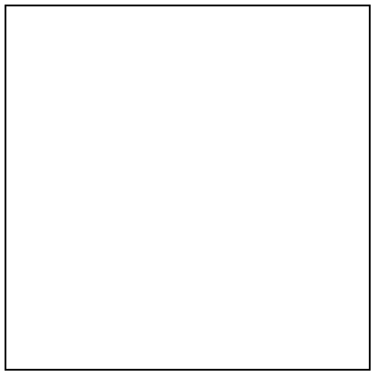
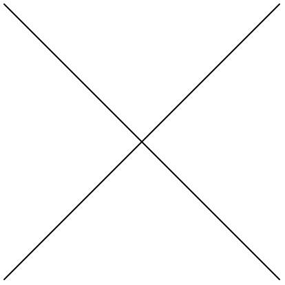
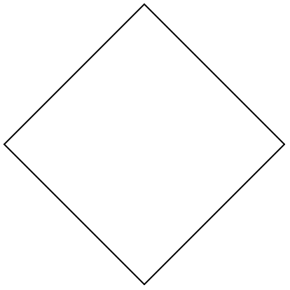

7.7
2 Chapter Two - Building Abstractions with Data
2.1 Introduction to Data Abstraction
2.1.1 Exercise 2.1
Some copying...
| > (define numer car) |
| > (define denom cdr) |
| > (define (add-rat x y) | | (make-rat (+ (* (numer x) (denom y)) | | (* (numer y) (denom x))) | | (* (denom x) (denom y)))) |
|
| > (define (sub-rat x y) | | (make-rat (- (* (numer x) (denom y)) | | (* (numer y) (denom x))) | | (* (denom x) (denom y)))) |
|
| > (define (mul-rat x y) | | (make-rat (* (numer x) (numer y)) | | (* (denom x) (denom y)))) |
|
| > (define (div-rat x y) | | (make-rat (* (numer x) (denom y)) | | (* (denom x) (numer y)))) |
|
| > (define (equal-rat? x y) | | (= (* (numer x) (denom y)) | | (* (numer y) (denom x)))) |
|
| > (define (print-rat x) | | (display (numer x)) | | (display "/") | | (display (denom x)) | | (newline)) |
|
Then to define make-rat:
| > (define (make-rat n d) | | (cond [(= d 0) (error "Division by 0")] | | [(< d 0) (make-rat (- 0 n) | | (- 0 d))] | | [else (let ([g (gcd n d)]) | | (cons (/ n g) | | (/ d g)))])) |
|
Examples:
| > (print-rat (make-rat 6 9)) |
2/3 |
| > (print-rat (make-rat -10 -100)) |
1/10 |
| > (print-rat (make-rat 10 -12)) |
-5/6 |
2.1.2 Exercise 2.2
| > (define make-point cons) |
| > (define x-point car) |
| > (define y-point cdr) |
| > (define (print-point p) | | (display "(") | | (display (x-point p)) | | (display ",") | | (display (y-point p)) | | (display ")") | | (newline)) |
|
| > (define make-segment cons) |
| > (define start-segment car) |
| > (define end-segment cdr) |
| > (define (average a b) | | (/ (+ a b) | | 2)) |
|
| > (define (midpoint-segment s) | | (make-point (average (x-point (start-segment s)) | | (x-point (end-segment s))) | | (average (y-point (start-segment s)) | | (y-point (end-segment s))))) |
|
Example:
| > (let ([segment (make-segment (make-point 0 1) | | (make-point 3 5))]) | | (print-point (start-segment segment)) | | (print-point (midpoint-segment segment)) | | (print-point (end-segment segment))) |
|
|
2.1.3 Exercise 2.3
First, it is worth implementing some functions that act on
top of the abstraction, to identify what should be required
of it.
Area and perimeter are those which were requested...
| > (define (rect-area rect) | | (* (rect-width rect) | | (rect-height rect))) |
|
| > (define (rect-perimeter rect) | | (* (+ (rect-height rect) | | (rect-width rect)) | | 2)) |
|
Thus, for that which is required, a simple pair
of width and height is sufficient.
| > (define (make-rect width height) | | (if (or (< width 0) | | (< height 0)) | | (error "Rectangle with negative size") | | (cons width height))) |
|
| > (define rect-width car) |
| > (define rect-height cdr) |
Examples:
| > (define rectangle (make-rect 4 8)) |
| > (rect-area rectangle) |
32 |
| > (rect-perimeter rectangle) |
24 |
Another implementation could be a pair of points,
one representing the top-right corner, another the
bottom left.
Not only is this more expressive, in that it gives
the rectangle a position, it can also be normalized
at construction to always have positive width and
height.
| > (define (make-rect corner opposite) | | (cond [(< (x-point opposite) | | (x-point corner)) | | | | (make-rect (make-point (x-point opposite) | | (y-point corner)) | | (make-point (x-point corner) | | (y-point opposite)))] | | | | [(< (y-point opposite) | | (y-point corner)) | | | | (make-rect (make-point (x-point corner) | | (y-point opposite)) | | (make-point (x-point opposite) | | (y-point corner)))] | | | | [else (cons corner opposite)])) |
|
| > (define rect-start car) |
| > (define rect-end cdr) |
| > (define (rect-width rect) | | (- (x-point (rect-end rect)) | | (x-point (rect-start rect)))) |
|
| > (define (rect-height rect) | | (- (y-point (rect-end rect)) | | (y-point (rect-start rect)))) |
|
Examples:
| > (define rectangle (make-rect (make-point 2 3) | | (make-point 6 11))) |
|
| > (rect-area rectangle) |
32 |
| > (rect-perimeter rectangle) |
24 |
2.1.4 Exercise 2.4
(car (cons x y)) would evaluate as:
| (car (cons x y)) |
| (car (lambda (m) (m x y))) |
| ((lambda (m) (m x y)) (lambda (p q) p)) |
| ((lambda (p q) p) x y) |
| x |
cdr would look like:
| (define (cdr z) |
| (z (lambda (p q) q))) |
2.1.5 Exercise 2.5
Prefixing with n- so the world doesn’t break...
| > (define (n-cons a b) | | (* (expt 2 a) | | (expt 3 b))) |
|
| > (define (log-base base) | | (let ([denom (log base)]) | | (lambda (x) | | (/ (log x) | | denom)))) |
|
| > (define (pair-getter base other) | | (let ([log-func (log-base base)]) | | (define (getter pair) | | (if (= (remainder pair other) 0) | | (getter (/ pair other)) | | (log-func pair))) | | getter)) |
|
| > (define n-car (pair-getter 2 3)) |
| > (define n-cdr (pair-getter 3 2)) |
Examples:
| > (n-car (n-cons 5 10)) |
5.0 |
| > (n-cdr (n-cons 8 12)) |
12.0 |
2.1.6 Exercise 2.6
The Church numeral n takes a function, and returns another that
repeats the original function n times.
| > (define one | | (lambda (f) f)) |
|
| > (define two | | (lambda (f) | | (lambda (x) | | (f (f x))))) |
|
| > (define (add a b) | | (lambda (f) | | (lambda (x) | | ((a f) ((b f) x))))) |
|
Examples:
| > (define (church->int church) | | ((church inc) 0)) |
|
| > (church->int one) |
1 |
| > (church->int two) |
2 |
| > (church->int (add one | | two)) |
|
3 |
| > (church->int (add (add two | | one) | | two)) |
|
5 |
And multiplication, for fun.
| > (define (multiply a b) | | (lambda (f) | | (a (b f)))) |
|
Examples:
| > (define zero | | (lambda (f) | | (lambda (x) x))) |
|
| > (define three (add one two)) |
| > (define four (multiply two two)) |
| > (church->int (multiply three | | two)) |
|
6 |
| > (church->int (add (multiply three | | four) | | one)) |
|
13 |
| > (church->int (multiply zero | | three)) |
|
0 |
2.1.7 Exercise 2.7
Copied...
| > (define (add-interval x y) | | (make-interval (+ (lower-bound x) (lower-bound y)) | | (+ (upper-bound x) (upper-bound y)))) |
|
| > (define (mul-interval x y) | | (let ((p1 (* (lower-bound x) (lower-bound y))) | | (p2 (* (lower-bound x) (upper-bound y))) | | (p3 (* (upper-bound x) (lower-bound y))) | | (p4 (* (upper-bound x) (upper-bound y)))) | | (make-interval (min p1 p2 p3 p4) | | (max p1 p2 p3 p4)))) |
|
| > (define (div-interval x y) | | (mul-interval x | | (make-interval (/ 1.0 (upper-bound y)) | | (/ 1.0 (lower-bound y))))) |
|
| > (define (make-interval a b) (cons a b)) |
| > (define (make-center-width c w) | | (make-interval (- c w) (+ c w))) |
|
| > (define (center i) | | (/ (+ (lower-bound i) (upper-bound i)) 2)) |
|
| > (define (width i) | | (/ (- (upper-bound i) (lower-bound i)) 2)) |
|
| > (define lower-bound car) |
| > (define upper-bound cdr) |
2.1.8 Exercise 2.8
The minimum value the subtraction could be is the
difference of the respective lower and upper bounds
and the maximum value it could be is the difference
of the upper and lower bounds respectively:
| > (define (sub-interval x y) | | (make-interval (- (lower-bound x) (upper-bound y)) | | (- (upper-bound x) (lower-bound y)))) |
|
Some interval printing...
| > (define (print-int interval) | | (display "[") | | (display (lower-bound interval)) | | (display ",") | | (display (upper-bound interval)) | | (display "]") | | (newline)) |
|
| > (define (print-int-cw interval) | | (display (center interval)) | | (display "±") | | (display (width interval)) | | (newline)) |
|
| > (define (print-int-cpct interval) | | (display (center interval)) | | (display "±") | | (display (percent interval)) | | (display "%") | | (newline)) |
|
Examples:
| > (define 15+-5 (make-center-width 15 5)) |
| > (define 2+-1 (make-center-width 2 1)) |
| > (print-int-cw (sub-interval 15+-5 | | 2+-1)) |
|
13±6 |
2.1.9 Exercise 2.9
For the addition and subtraction of any two intervals a and b,
the resulting interval will simply have a width which is the
sum of a and b’s respective widths.
Where
[x, y] is the interval between x and y
C_a is the center of the interval a
W_a is the width of the interval a
U_a is the upper bound of the interval a
L_a is the lower bound of the interval a
Addition can be written as such:
a + b = c
[L_a, U_a] + [L_b, U_b] = [L_a + L_b, U_a + U_b]
= [C_a - W_a, C_a + W_a] + [C_b - W_b, C_b + W_b]
= [(C_a - W_a) + (C_b - W_b), (C_a + W_a) + (C_b + W_b)]
= [(C_a + C_b) - (W_a + W_b), (C_a + C_b) + (W_a + W_b)] = c
Calculating its width:
W_c = {U_c - L_c \over 2}
= {((C_a + C_b) + (W_a + W_b)) - ((C_a + C_b) - (W_a + W_b)) \over 2}
= {2(W_a + W_b) \over 2}
= W_a + W_b
Similarly for subtraction:
a - b = c
[L_a, U_a] - [L_b, U_b] = [L_a - U_b, U_a - L_b]
= [C_a - W_a, C_a + W_a] - [C_b - W_b, C_b + W_b]
= [(C_a - W_a) - (C_b + W_b), (C_a + W_a) - (C_b - W_b)]
= [(C_a - C_b) - (W_a + W_b), (C_a - C_b) + (W_a + W_b)] = c
Calculating its width:
W_c = {U_c - L_c \over 2}
= {((C_a - C_b) + (W_a + W_b)) - ((C_a - C_b) - (W_a + W_b)) \over 2}
= {2(W_a + W_b) \over 2}
= W_a + W_b
For multiplication and division, in the following examples,
int-a and int-b have the same width. When multiplied
(or divided) by int-c, the results have different widths.
| > (define int-a (make-center-width 3 1)) |
| > (define int-b (make-center-width 5 1)) |
| > (define int-c (make-interval 1 2)) |
| > (print-int-cw int-a) |
3±1 |
| > (print-int-cw int-b) |
5±1 |
| > (print-int-cw int-c) |
3/2±1/2 |
| > (print-int-cw (mul-interval int-a int-c)) |
5±3 |
| > (print-int-cw (mul-interval int-b int-c)) |
8±4 |
| > (print-int-cw (div-interval int-a int-c)) |
2.5±1.5 |
| > (print-int-cw (div-interval int-b int-c)) |
4.0±2.0 |
Thus, the resulting width of interval division or multiplication
is dependent not solely on width.
2.1.10 Exercise 2.10
| > (define (spans-zero? interval) | | (and (<= (lower-bound interval) 0) | | (>= (upper-bound interval) 0))) |
|
| > (define (div-interval x y) | | (if (spans-zero? y) | | (error "Interval division spanning zero") | | (mul-interval x | | (make-interval (/ 1.0 (upper-bound y)) | | (/ 1.0 (lower-bound y)))))) |
|
Example:
| > (div-interval (make-interval 1 1) | | (make-interval -1 1)) |
|
Interval division spanning zero | context...: | eval-one-top | /usr/share/racket/pkgs/sandbox-lib/racket/sandbox.rkt:412:0: call-with-limits | /usr/share/racket/pkgs/sandbox-lib/racket/sandbox.rkt:510:0: call-with-custodian-shutdown | /usr/share/racket/collects/racket/private/more-scheme.rkt:148:2: call-with-break-parameterization | .../more-scheme.rkt:261:28 | /usr/share/racket/pkgs/sandbox-lib/racket/sandbox.rkt:878:5: loop |
|
2.1.11 Exercise 2.11
The previous implementation, to compare:
| > (define (mul-intervals l-x u-x l-y u-y) | | (print-int (mul-interval (make-interval l-x u-x) | | (make-interval l-y u-y)))) |
|
| > (mul-intervals 1 2 | | 3 4) |
|
[3,8] |
| > (mul-intervals 1 2 | | -3 4) |
|
[-6,8] |
| > (mul-intervals 1 2 | | -4 -3) |
|
[-8,-3] |
| > (mul-intervals -1 2 | | 3 4) |
|
[-4,8] |
| > (mul-intervals -1 2 | | -3 4) |
|
[-6,8] |
| > (mul-intervals -1 2 | | -4 -3) |
|
[-8,4] |
| > (mul-intervals -2 -1 | | 3 4) |
|
[-8,-3] |
| > (mul-intervals -2 -1 | | -3 4) |
|
[-8,6] |
| > (mul-intervals -2 -1 | | -4 -3) |
|
[3,8] |
| > (define (pos? n) | | (>= n 0)) |
|
| > (define (mul-interval x y) | | (let ([l- lower-bound] | | [u- upper-bound] | | [mi (lambda (a b c d) | | (make-interval (* (a x) | | (b y)) | | (* (c x) | | (d y))))]) | | | | (case (+ (if (pos? (l- x)) 8 0) | | (if (pos? (u- x)) 4 0) | | (if (pos? (l- y)) 2 0) | | (if (pos? (u- y)) 1 0)) | | [0 (mi u- u- l- l-)] | | [1 (mi l- u- l- l-)] | | [3 (mi l- u- u- l-)] | | [4 (mi u- l- l- l-)] | | [5 (make-interval (min (* (l- x) | | (u- y)) | | (* (u- x) | | (l- y))) | | (max (* (u- x) | | (u- y)) | | (* (l- x) | | (l- y))))] | | [7 (mi l- u- u- u-)] | | [12 (mi u- l- l- u-)] | | [13 (mi u- l- u- u-)] | | [15 (mi l- l- u- u-)]))) |
|
Examples:
| > (mul-intervals 1 2 | | 3 4) |
|
[3,8] |
| > (mul-intervals 1 2 | | -3 4) |
|
[-6,8] |
| > (mul-intervals 1 2 | | -4 -3) |
|
[-8,-3] |
| > (mul-intervals -1 2 | | 3 4) |
|
[-4,8] |
| > (mul-intervals -1 2 | | -3 4) |
|
[-6,8] |
| > (mul-intervals -1 2 | | -4 -3) |
|
[-8,4] |
| > (mul-intervals -2 -1 | | 3 4) |
|
[-8,-3] |
| > (mul-intervals -2 -1 | | -3 4) |
|
[-8,6] |
| > (mul-intervals -2 -1 | | -4 -3) |
|
[3,8] |
2.1.12 Exercise 2.12
| > (define (make-center-percent c pct) | | (make-center-width c | | (* (/ pct | | 100) | | c))) |
|
| > (define (percent interval) | | (* (/ (width interval) | | (center interval)) | | 100)) |
|
Examples:
| > (print-int-cpct (make-center-percent 1000 25)) |
1000±25% |
| > (print-int-cw (make-center-percent 3000 5)) |
3000±150 |
2.1.13 Exercise 2.13
With all bounds positive, and with the definitions as in
Exercise 2.9, multiplication can be written as:
ab = c
[L_a, U_a][L_b, U_b] =
[L_aL_b, U_aU_b] = c
Where T_a = {W_a \over C_a} (percentage tolerance divided by 100):
L_a = C_a(1 - T_a)
U_a = C_a(1 + T_a)
Thus:
c = [C_aC_b(1 - T_a)(1 - T_b), C_aC_b(1 + T_a)(1 + T_b)]
The center:
C_c = {C_aC_b(1 - T_a)(1 - T_b) + C_aC_b(1 + T_a)(1 + T_b) \over 2}
= {C_aC_b[(1 - T_a)(1 - T_b) + (1 + T_a)(1 + T_b)] \over 2}
= {2C_aC_b(1 + T_aT_b) \over 2}
= C_aC_b(1 + T_aT_b)
And the width:
W_c = {C_aC_b(1 + T_a)(1 + T_b) - C_aC_b(1 - T_a)(1 - T_b) \over 2}
= {C_aC_b[(1 + T_a)(1 + T_b) - (1 - T_a)(1 - T_b)] \over 2}
= {2C_aC_b(T_a + T_b) \over 2}
= C_aC_b(T_a + T_b)
Finally:
T_c = {W_c \over C_c}
= {C_aC_b(T_a + T_b) \over C_aC_b(1 + T_aT_b)}
= {T_a + T_b \over 1 + T_aT_b}
Thus, with small percentage tolerance:
T_c \approx T_a + T_b
2.1.14 Exercise 2.14
Copying...
| > (define (par1 r1 r2) | | (div-interval (mul-interval r1 r2) | | (add-interval r1 r2))) |
|
| > (define (par2 r1 r2) | | (let ((one (make-interval 1 1))) | | (div-interval one | | (add-interval (div-interval one r1) | | (div-interval one r2))))) |
|
Examples:
| > (define r_A (make-center-percent 240 8)) |
| > (define r_B (make-center-percent 960 10)) |
| > (print-int-cpct r_A) |
240±8% |
| > (print-int-cpct r_B) |
960±10% |
| > (print-int-cpct (par1 r_A r_B)) |
198.6848394806537±26.994382022471918% |
| > (print-int-cpct (par2 r_A r_B)) |
191.98759770040692±8.40116279069767% |
Clearly, the given examples demonstrate different results.
Here are some more examples:
| > (print-int-cpct (div-interval r_A r_A)) |
1.0128824476650564±15.898251192368825% |
| > (print-int-cpct (mul-interval r_B | | (div-interval r_A | | r_B))) |
|
248.72727272727275±27.368421052631582% |
| > (print-int-cw (sub-interval r_A r_A)) |
0±192/5 |
| > (print-int-cpct (add-interval r_B | | (sub-interval r_A | | r_B))) |
|
240±88% |
The penultimate one isn’t percent width, since percentage of zero makes no sense.
Notably, with intervals a and b,
{a \over a} \neq [1, 1]
a - a \neq [0, 0]
b{a \over b} \neq a
a - b + b \neq a
2.1.15 Exercise 2.15
Each time an uncertain interval appears, it introduces some uncertainty. Uncertainty
increases with each operation of two uncertain values. Thus, reducing the number
of uncertain variables, by avoiding repetitions, reduces the uncertainty of the calculation
overall.
2.1.16 Exercise 2.16
As shown in Exercise 2.14, otherwise algebraically equivalent expressions, such as
{a \over a} = 1
a - a = 0
b{a \over b} = a
a - b + b = a
don’t hold for intervals with this program.
The program treats any two intervals as distinct. Thus, though an interval a can only
have a single value, and algebraic equivalences should hold, the package does not take this
into account, and interprets any two occurences of the same variable as uncertain values
in their own right.
Devising a package without this shortcoming may be possible, by storing performed
operations instead of calculating them on the spot, then operating on those in some way.
However, a system like that would be significantly more complicated, and likely far less
performant.
And to answer the question, I personally would be unable to do this.
2.2 Hierarchical Data and the Closure Property
2.2.1 Exercise 2.17
List printing:
| > (define (print-el el) | | (cond [(list? el) (print-list el)] | | [(pair? el) (print-pair el)] | | [else (write el)])) |
|
| > (define (print-list l) | | (display "(") | | (define (iter l) | | (begin (print-el (car l)) | | (if (null? (cdr l)) | | (display ")") | | (begin (display " ") | | (iter (cdr l)))))) | | (if (null? l) | | (display ")") | | (iter l))) |
|
| > (define (print-pair p) | | (display "(") | | (print-el (car p)) | | (display " . ") | | (print-el (cdr p)) | | (display ")")) |
|
Examples:
| > (print-list nil) |
() |
| > (print-list (list 1 2 3 4)) |
(1 2 3 4) |
| > (print-pair (cons 1 2)) |
(1 . 2) |
| > (print-list (list 1 2 (cons 3 4))) |
(1 2 (3 . 4)) |
| > (define (last-pair l) | | (if (null? (cdr l)) | | l | | (last-pair (cdr l)))) |
|
Example:
| > (print-list (last-pair (list 23 72 149 34))) |
(34) |
2.2.2 Exercise 2.18
| > (define (reversed l) | | (define (iter old-list | | new-list) | | (if (null? old-list) | | new-list | | (iter (cdr old-list) | | (cons (car old-list) | | new-list)))) | | (iter l nil)) |
|
Example:
| > (print-list (reversed (list 1 4 9 16 25))) |
(25 16 9 4 1) |
2.2.3 Exercise 2.19
Defining coin values...
| > (define us-coins (list 50 25 10 5 1)) |
| > (define uk-coins (list 100 50 20 10 5 2 1 0.5)) |
| > (define (cc amount coin-values) | | (cond ((= amount 0) 1) | | ((or (< amount 0) (no-more? coin-values)) 0) | | (else | | (+ (cc amount | | (except-first-denomination coin-values)) | | (cc (- amount | | (first-denomination coin-values)) | | coin-values))))) |
|
| > (define first-denomination car) |
| > (define except-first-denomination cdr) |
| > (define no-more? null?) |
Examples:
| > (cc 100 us-coins) |
292 |
| > (cc 100 uk-coins) |
104561 |
The order of the coins does not matter, since all possible branches will be explored anyway.
| > (cc 100 (reverse us-coins)) |
292 |
| > (cc 100 (list 25 10 1 5 50)) |
292 |
2.2.4 Exercise 2.20
| > (define (filter accept? l) | | (define (iter old-list new-list) | | (if (null? old-list) | | new-list | | (iter (cdr old-list) | | (if (accept? (car old-list)) | | (cons (car old-list) new-list) | | new-list)))) | | (reverse (iter l nil))) |
|
| > (define (same-parity first . rest) | | (filter (if (even? first) | | even? | | (lambda (x) (not (even? x)))) | | (cons first rest))) |
|
Examples:
| > (print-list (same-parity 1 2 3 4 5 6 7)) |
(1 3 5 7) |
| > (print-list (same-parity 2 3 4 5 6 7)) |
(2 4 6) |
2.2.5 Exercise 2.21
| > (define (square x) (* x x)) |
| > (define (square-list items) | | (if (null? items) | | nil | | (cons (square (car items)) | | (square-list (cdr items))))) |
|
| > (print-list (square-list (list 1 2 3 4))) |
(1 4 9 16) |
| > (define (square-list items) | | (map square items)) |
|
| > (print-list (square-list (list 1 2 3 4))) |
(1 4 9 16) |
2.2.6 Exercise 2.22
| (define (square-list items) |
| (define (iter things answer) |
| (if (null? things) |
| answer |
| (iter (cdr things) |
| (cons (square (car things)) |
| answer)))) |
| (iter items nil)) |
Using cons, one prepends a value to an existing list.
Thus, iterating over a list, the elements of the original list are
prepended sequentially to the new list, making the new list a reverse
of the old one.
| (define (square-list items) |
| (define (iter things answer) |
| (if (null? things) |
| answer |
| (iter (cdr things) |
| (cons answer |
| (square (car things)))))) |
| (iter items nil)) |
A list is a pair, whose first value is the first value of the list,
and whose second value is the rest of the list.
Here, Louis is making a pair whose first element is the rest of the
new list, and the second element is the squared number.
Thus, by switching the arguments of cons, what Louis has created
is not a list at all.
2.2.7 Exercise 2.23
| > (define (for-each proc l) | | (if (null? l) | | true | | (begin (proc (car l)) | | (for-each proc | | (cdr l))))) |
|
Example:
| > (for-each (lambda (x) (newline) (display x)) | | (list 57 321 88)) |
|
|
2.2.8 Exercise 2.24
| > (print-list (list 1 (list 2 (list 3 4)))) |
(1 (2 (3 4))) |

2.2.9 Exercise 2.25
| > (car (cdaddr (list 1 3 (list 5 7) 9))) |
7 |
| > (caar (list (list 7))) |
7 |
| > (cadadr (cadadr (cadadr (list 1 (list 2 (list 3 (list 4 (list 5 (list 6 7))))))))) |
7 |
2.2.10 Exercise 2.26
| > (define x (list 1 2 3)) |
| > (define y (list 4 5 6)) |
| > (print-list (append x y)) |
(1 2 3 4 5 6) |
| > (print-list (cons x y)) |
((1 2 3) 4 5 6) |
| > (print-list (list x y)) |
((1 2 3) (4 5 6)) |
2.2.11 Exercise 2.27
| > (define (deep-reverse l) | | (map (lambda (el) | | (if (list? el) | | (deep-reverse el) | | el)) | | (reverse l))) |
|
Examples:
| > (define x (list (list 1 2) (list 3 4))) |
| > (print-list x) |
((1 2) (3 4)) |
| > (print-list (reverse x)) |
((3 4) (1 2)) |
| > (print-list (deep-reverse x)) |
((4 3) (2 1)) |
2.2.12 Exercise 2.28
| > (define (reduce reducer | | base | | l) | | (define (iter result remaining) | | (if (null? remaining) | | result | | (iter (reducer result | | (car remaining)) | | (cdr remaining)))) | | (iter base l)) |
|
| > (define (fringe l) | | (reduce (lambda (result | | el) | | (if (list? el) | | (append result (fringe el)) | | (append result (list el)))) nil l)) |
|
Examples:
| > (print-list (fringe x)) |
(1 2 3 4) |
| > (print-list (fringe (list x x))) |
(1 2 3 4 1 2 3 4) |
2.2.13 Exercise 2.29
Copied:
| > (define (make-mobile left right) | | (list left right)) |
|
| > (define (make-branch length structure) | | (list length structure)) |
|
2.2.13.1 Exercise 2.29.a
| > (define left-branch car) |
| > (define right-branch cadr) |
Examples:
| > (define test-mobile | | (make-mobile (make-branch 3 15) | | (make-branch 1 (make-mobile (make-branch 2 15) | | (make-branch 1 30))))) |
|
| > (print-list (left-branch test-mobile)) |
(3 15) |
| > (print-list (right-branch test-mobile)) |
(1 ((2 15) (1 30))) |
2.2.13.2 Exercise 2.29.b
More selectors:
| > (define branch-length car) |
| > (define branch-struct cadr) |
| > (define mobile? pair?) |
| > (define (branch-weight branch) | | (if (mobile? (branch-struct branch)) | | (total-weight (branch-struct branch)) | | (branch-struct branch))) |
|
| > (define (total-weight mobile) | | (+ (branch-weight (left-branch mobile)) | | (branch-weight (right-branch mobile)))) |
|
Example:
| > (total-weight test-mobile) |
60 |
2.2.13.3 Exercise 2.29.c
This implementation is inefficient due to repeated recursive weight checks...
| > (define (branch-torque branch) | | (* (branch-length branch) | | (branch-weight branch))) |
|
| > (define (branch-balanced? branch) | | (or (not (mobile? (branch-struct branch))) | | (balanced? (branch-struct branch)))) |
|
| > (define (balanced? mobile) | | (and (branch-balanced? (left-branch mobile)) | | (branch-balanced? (right-branch mobile)) | | (= (branch-torque (left-branch mobile)) | | (branch-torque (right-branch mobile))))) |
|
Examples:
| > (balanced? test-mobile) |
#t |
| > (define (balanced-mobile) | | (make-mobile (make-branch 1 (make-mobile (make-branch 4 8) | | (make-branch 2 16))) | | (make-branch 2 (make-mobile (make-branch 1 (make-mobile (make-branch 1 6) | | (make-branch 3 2))) | | (make-branch 2 4))))) |
|
| > (balanced? (balanced-mobile)) |
#t |
| > (define (unbalanced-mobile) | | (make-mobile (make-branch 1 (make-mobile (make-branch 2 8) | | (make-branch 4 16))) | | (make-branch 2 (make-mobile (make-branch 1 (make-mobile (make-branch 1 6) | | (make-branch 3 2))) | | (make-branch 2 4))))) |
|
| > (balanced? (unbalanced-mobile)) |
#f |
2.2.13.4 Exercise 2.29.d
| > (define (make-mobile left right) | | (cons left right)) |
|
| > (define (make-branch length structure) | | (cons length structure)) |
|
Only a couple selectors have to be changed:
| > (define right-branch cdr) |
| > (define branch-struct cdr) |
Examples:
| > (balanced? (balanced-mobile)) |
#t |
| > (balanced? (unbalanced-mobile)) |
#f |
2.2.14 Exercise 2.30
Directly:
| > (define (square-tree tree) | | (if (null? tree) | | nil | | (cons (let ([node (car tree)]) | | (if (pair? node) | | (square-tree node) | | (square node))) | | (square-tree (cdr tree))))) |
|
Examples:
| > (define test-tree | | (list 1 | | (list 2 (list 3 4) 5) | | (list 6 7))) |
|
| > (print-list test-tree) |
(1 (2 (3 4) 5) (6 7)) |
| > (print-list (square-tree test-tree)) |
(1 (4 (9 16) 25) (36 49)) |
In terms of map:
| > (define (square-tree tree) | | (reduce (lambda (a b) (append a (list b))) | | nil | | (map (lambda (node) | | (if (pair? node) | | (square-tree node) | | (square node))) | | tree))) |
|
Example:
| > (print-list (square-tree test-tree)) |
(1 (4 (9 16) 25) (36 49)) |
2.2.15 Exercise 2.31
| > (define (tree-map proc tree) | | (define (recur tree) | | (reduce (lambda (a b) | | (append a (list b))) | | nil | | (map (lambda (node) | | (if (pair? node) | | (recur node) | | (proc node))) | | tree))) | | (recur tree)) |
|
| > (define (square-tree tree) (tree-map square tree)) |
Example:
| > (print-list (square-tree test-tree)) |
(1 (4 (9 16) 25) (36 49)) |
2.2.16 Exercise 2.32
| > (define (partial proc . partial-args) | | (lambda args | | (apply proc (append partial-args args)))) |
|
| > (define (subsets s) | | (if (null? s) | | (list nil) | | (let ((rest (subsets (cdr s)))) | | (append rest (map (partial cons (car s)) rest))))) |
|
Example:
| > (print-list (subsets (list 1 2 3))) |
(() (3) (2) (2 3) (1) (1 3) (1 2) (1 2 3)) |
The power set (set of all subsets) of a finite set S, \mathcal{P}(S), can be defined recursively as:
For all x in S
and all T that are a subset of S without x,
\{\text{subsets of }S\} =
\{t\text{ union }\{x\}\text{ such that }t\text{ is a subset of }T\}\text{ union }\{\text{subsets of }T\}
Or formally:
\forall x \in S \wedge T \subset S \wedge x \notin T,
\mathcal{P}(S) = \{t \cup \{x\} : t \subseteq T\} \cup \mathcal{P}(T)
With the base case that:
\mathcal{P}(\emptyset) = \{\emptyset\}
2.2.17 Exercise 2.33
Redefining according to the book:
| > (define (filter predicate sequence) | | (cond ((null? sequence) nil) | | ((predicate (car sequence)) | | (cons (car sequence) | | (filter predicate (cdr sequence)))) | | (else (filter predicate (cdr sequence))))) |
|
| > (define (accumulate op initial sequence) | | (if (null? sequence) | | initial | | (op (car sequence) | | (accumulate op initial (cdr sequence))))) |
|
| > (define (mapped p sequence) | | (accumulate (lambda (x y) (cons (p x) y)) nil sequence)) |
|
| > (define (appended seq1 seq2) | | (accumulate cons seq2 seq1)) |
|
| > (define (length-of sequence) | | (accumulate (lambda (x y) (inc y)) 0 sequence)) |
|
Examples:
| > (print-list (mapped square (list 1 2 3 4 5))) |
(1 4 9 16 25) |
| > (print-list (appended (list 1 2 3 4) (list 5 6 7 8))) |
(1 2 3 4 5 6 7 8) |
| > (length-of (list 1 2 3 4 5 6 7 8)) |
8 |
2.2.18 Exercise 2.34
| > (define (horner-eval x coefficient-sequence) | | (accumulate (lambda (this-coeff higher-terms) | | (+ (* higher-terms x) | | this-coeff)) | | 0 | | coefficient-sequence)) |
|
Example:
| > (horner-eval 2 (list 1 3 0 5 0 1)) |
79 |
2.2.19 Exercise 2.35
| > (define (count-leaves t) | | (accumulate (lambda (node-count total) | | (+ node-count total)) | | 0 | | (map (lambda (node) | | (if (pair? node) | | (count-leaves node) | | 1)) | | t))) |
|
Examples:
| > (print-list x) |
((1 2) (3 4)) |
| > (count-leaves (list x x)) |
8 |
2.2.20 Exercise 2.36
| > (define (accumulate-n op init seqs) | | (if (null? (car seqs)) | | nil | | (cons (accumulate op init (map car seqs)) | | (accumulate-n op init (map cdr seqs))))) |
|
Examples:
| > (define s (list (list 1 2 3) | | (list 4 5 6) | | (list 7 8 9) | | (list 10 11 12))) |
|
| > (print-list (accumulate-n + 0 s)) |
(22 26 30) |
2.2.21 Exercise 2.37
Copied:
| > (define (dot-product v w) | | (accumulate + 0 (map * v w))) |
|
Matrix utils:
| > (define (padded-num num count char) | | (string-append (make-string (- count (num-length num)) | | char) | | (number->string num))) |
|
| > (define (num-length number) | | (string-length (number->string number))) |
|
| > (define (print-matrix mat) | | (define el-len | | (apply max | | (map (lambda (line) | | (apply max | | (map num-length | | line))) | | mat))) | | (for-each (lambda (line) | | (for-each (lambda (el) | | (display (padded-num el el-len #\space)) | | (display " ")) | | line) | | (newline)) | | mat)) |
|
| > (define (identity-matrix size) | | (if (= 0 size) nil | | (cons (cons 1 ((repeated (partial cons 0) | | (dec size)) nil)) | | (map (lambda (line) | | (cons 0 line)) | | (identity-matrix (dec size)))))) |
|
| > (define (matrix-*-vector m v) | | (map (partial dot-product v) m)) |
|
| > (define (transpose mat) | | (accumulate-n cons nil mat)) |
|
| > (define (matrix-*-matrix m n) | | (map (partial matrix-*-vector (transpose n)) m)) |
|
Examples:
| > (define test-matrix | | (list (list 1 2 3 4) | | (list 4 5 6 6) | | (list 6 7 8 9))) |
|
| > (print-matrix test-matrix) |
|
| > (print-matrix (identity-matrix 4)) |
1 0 0 0 | 0 1 0 0 | 0 0 1 0 | 0 0 0 1 |
|
| > (print-list (matrix-*-vector (list (list 3 0 1) | | (list 0 8 0) | | (list 1 2 3)) | | (list 3 5 7))) |
|
(16 40 34) |
| > (print-matrix (transpose test-matrix)) |
|
| > (print-matrix (matrix-*-matrix test-matrix | | (identity-matrix 4))) |
|
|
| > (print-matrix (matrix-*-matrix test-matrix | | (transpose test-matrix))) |
|
30 56 80 | 56 113 161 | 80 161 230 |
|
| > (print-matrix (matrix-*-matrix (transpose test-matrix) | | test-matrix)) |
|
53 64 75 82 | 64 78 92 101 | 75 92 109 120 | 82 101 120 133 |
|
2.2.22 Exercise 2.38
| > (define fold-right accumulate) |
| > (define fold-left reduce) |
Just evaluate them...
| > (fold-right / 1 (list 1 2 3)) |
3/2 |
| > (fold-left / 1 (list 1 2 3)) |
1/6 |
| > (print-list (fold-right list nil (list 1 2 3))) |
(1 (2 (3 ()))) |
| > (print-list (fold-left list nil (list 1 2 3))) |
(((() 1) 2) 3) |
fold-left and fold-right will always produce the same
value for any sequence if op is commutative.
2.2.23 Exercise 2.39
| > (define (reverse-a sequence) | | (fold-right (lambda (x y) (append y (list x))) nil sequence)) |
|
| > (define (reverse-b sequence) | | (fold-left (lambda (x y) (cons y x)) nil sequence)) |
|
Examples:
| > (print-list (reverse-a (list 1 2 3 4 5 6))) |
(6 5 4 3 2 1) |
| > (print-list (reverse-b (list 1 2 3 4 5 6))) |
(6 5 4 3 2 1) |
2.2.24 Exercise 2.40
Copied:
| > (define (enumerate-interval low high) | | (if (> low high) | | nil | | (cons low (enumerate-interval (inc low) high)))) |
|
| > (define (prime-sum? pair) | | (prime? (+ (car pair) (cadr pair)))) |
|
| > (define (make-pair-sum pair) | | (list (car pair) (cadr pair) (+ (car pair) (cadr pair)))) |
|
| > (define (unique-pairs n) | | (if (<= n 1) | | nil | | (append (unique-pairs (dec n)) | | (map (partial list n) | | (enumerate-interval 1 (dec n)))))) |
|
Example:
| > (print-matrix (unique-pairs 6)) |
2 1 | 3 1 | 3 2 | 4 1 | 4 2 | 4 3 | 5 1 | 5 2 | 5 3 | 5 4 | 6 1 | 6 2 | 6 3 | 6 4 | 6 5 |
|
| > (define (prime-sum-pairs n) | | (map make-pair-sum | | (filter prime-sum? | | (unique-pairs 6)))) |
|
Example:
| > (print-matrix (prime-sum-pairs 6)) |
2 1 3 | 3 2 5 | 4 1 5 | 4 3 7 | 5 2 7 | 6 1 7 | 6 5 11 |
|
2.2.25 Exercise 2.41
| > (define (specific-sum-triples n s) | | (filter (sums-to? s) | | (unique-triples n))) |
|
| > (define (unique-triples n) | | (if (<= n 2) | | nil | | (append (unique-triples (dec n)) | | (map (partial cons n) | | (unique-pairs (dec n)))))) |
|
| > (define (sums-to? n) | | (lambda (seq) | | (= (apply + seq) n))) |
|
Examples:
| > (print-matrix (unique-triples 6)) |
3 2 1 | 4 2 1 | 4 3 1 | 4 3 2 | 5 2 1 | 5 3 1 | 5 3 2 | 5 4 1 | 5 4 2 | 5 4 3 | 6 2 1 | 6 3 1 | 6 3 2 | 6 4 1 | 6 4 2 | 6 4 3 | 6 5 1 | 6 5 2 | 6 5 3 | 6 5 4 |
|
| > (print-matrix (specific-sum-triples 6 11)) |
|
2.2.26 Exercise 2.42
Copied:
| > (define (flatmap proc seq) | | (accumulate append nil (map proc seq))) |
|
| > (define (queens board-size) | | (define (queen-cols k) | | (if (= k 0) | | (list empty-board) | | (filter | | (lambda (positions) (safe? k positions)) | | (flatmap | | (lambda (rest-of-queens) | | (map (lambda (new-row) | | (adjoin-position new-row k rest-of-queens)) | | (enumerate-interval 1 board-size))) | | (queen-cols (- k 1)))))) | | (queen-cols board-size)) |
|
| > (define empty-board nil) |
| > (define (adjoin-position row col rest) | | (cons (list row col) rest)) |
|
| > (define row-of car) |
| > (define col-of cadr) |
| > (define (safe? k queens) | | (null? (filter (let ([this-queen (car queens)]) | | (lambda (other-queen) | | (or (= (row-of this-queen) | | (row-of other-queen)) | | | | (= (col-of this-queen) | | (col-of other-queen)) | | | | (= (- (row-of this-queen) | | (col-of this-queen)) | | (- (row-of other-queen) | | (col-of other-queen))) | | | | (= (+ (row-of this-queen) | | (col-of this-queen)) | | (+ (row-of other-queen) | | (col-of other-queen)))))) | | | | (cdr queens)))) |
|
Board drawing!
| > (define range enumerate-interval) |
| > (define (print-queens queens) | | (let* ([size (length queens)] | | [line (string-append " " | | ((repeated (partial string-append "+---") size) | | "+\n"))]) | | (define (pos-char row col) | | (if (null? (filter (lambda (queen) | | (and (= (car queen) row) | | (= (cadr queen) col))) | | queens)) | | #\space | | #\Q)) | | (display " ") | | (for-each (lambda (col) | | (display " ") | | (display col) | | (display " ")) | | (range 1 size)) | | (newline) | | (for-each (lambda (row) | | (display line) | | (display row) | | (display " ") | | (for-each (lambda (col) | | (display "| ") | | (display (pos-char row col)) | | (display " ")) | | (range 1 size)) | | (display "|\n")) | | (range 1 size)) | | (display line) | | (display " \n"))) |
|
Examples:
| > (length (queens 8)) |
92 |
| > (define six-queens (queens 6)) |
| > (length six-queens) |
4 |
| > (for-each print-queens six-queens) |
1 2 3 4 5 6 | +---+---+---+---+---+---+ | 1 | | | | Q | | | | +---+---+---+---+---+---+ | 2 | Q | | | | | | | +---+---+---+---+---+---+ | 3 | | | | | Q | | | +---+---+---+---+---+---+ | 4 | | Q | | | | | | +---+---+---+---+---+---+ | 5 | | | | | | Q | | +---+---+---+---+---+---+ | 6 | | | Q | | | | | +---+---+---+---+---+---+ | | 1 2 3 4 5 6 | +---+---+---+---+---+---+ | 1 | | | | | Q | | | +---+---+---+---+---+---+ | 2 | | | Q | | | | | +---+---+---+---+---+---+ | 3 | Q | | | | | | | +---+---+---+---+---+---+ | 4 | | | | | | Q | | +---+---+---+---+---+---+ | 5 | | | | Q | | | | +---+---+---+---+---+---+ | 6 | | Q | | | | | | +---+---+---+---+---+---+ | | 1 2 3 4 5 6 | +---+---+---+---+---+---+ | 1 | | Q | | | | | | +---+---+---+---+---+---+ | 2 | | | | Q | | | | +---+---+---+---+---+---+ | 3 | | | | | | Q | | +---+---+---+---+---+---+ | 4 | Q | | | | | | | +---+---+---+---+---+---+ | 5 | | | Q | | | | | +---+---+---+---+---+---+ | 6 | | | | | Q | | | +---+---+---+---+---+---+ | | 1 2 3 4 5 6 | +---+---+---+---+---+---+ | 1 | | | Q | | | | | +---+---+---+---+---+---+ | 2 | | | | | | Q | | +---+---+---+---+---+---+ | 3 | | Q | | | | | | +---+---+---+---+---+---+ | 4 | | | | | Q | | | +---+---+---+---+---+---+ | 5 | Q | | | | | | | +---+---+---+---+---+---+ | 6 | | | | Q | | | | +---+---+---+---+---+---+ | |
|
2.2.27 Exercise 2.43
| (flatmap |
| (lambda (new-row) |
| (map (lambda (rest-of-queens) |
| (adjoin-position new-row k rest-of-queens)) |
| (queen-cols (- k 1)))) |
| (enumerate-interval 1 board-size)) |
In doing this, queen-cols (- k 1) is recalculated unnecessarily every time
| (lambda (new-row) |
| (map (lambda (rest-of-queens) |
| (adjoin-position new-row k rest-of-queens)) |
| (queen-cols (- k 1)))) |
is called.
That is, (queen-cols (k - 1)) gets called board-size times from
(queen-cols k), which means the time complexity of queen-cols,
and thus queens, grows exponentially.
Therefore, Louis’ program will take approximately n^n times as long to compute
(queens n) compared to the other program.
2.2.28 Exercise 2.44
Copied:
| > (define (right-split painter n) | | (if (= n 0) | | painter | | (let ((smaller (right-split painter (- n 1)))) | | (beside painter (below smaller smaller))))) |
|
| > (define (corner-split painter n) | | (if (= n 0) | | painter | | (let ((up (up-split painter (- n 1))) | | (right (right-split painter (- n 1)))) | | (let ((top-left (beside up up)) | | (bottom-right (below right right)) | | (corner (corner-split painter (- n 1)))) | | (beside (below painter top-left) | | (below bottom-right corner)))))) |
|
| > (define (up-split painter n) | | (if (= n 0) | | painter | | (let ((smaller (up-split painter (- n 1)))) | | (below painter (beside smaller smaller))))) |
|
Examples:
| > (up-split wave 4) |

|
| > (up-split rogers 4) |
|
| > (corner-split wave 4) |

|
| > (corner-split rogers 4) |

|
2.2.29 Exercise 2.45
| > (define (split final-combiner | | smaller-combiner) | | (define (loop painter n) | | (if (= n 0) | | painter | | (let ([smaller (loop painter (- n 1))]) | | (final-combiner painter | | (smaller-combiner smaller smaller))))) | | loop) |
|
| > (define right-split (split beside below)) |
| > (define up-split (split below beside)) |
Examples:
| > (up-split wave 4) |

|
| > (up-split rogers 4) |

|
| > (corner-split wave 4) |
|
| > (corner-split rogers 4) |

|
2.2.30 Exercise 2.46
| > (define (make-vect x y) | | (list x y)) |
|
| > (define xcor-vect car) |
| > (define ycor-vect cadr) |
| > (define (add-vect a b) | | (make-vect (+ (xcor-vect a) | | (xcor-vect b)) | | (+ (ycor-vect a) | | (ycor-vect b)))) |
|
| > (define (sub-vect a b) | | (make-vect (- (xcor-vect a) | | (xcor-vect b)) | | (- (ycor-vect a) | | (ycor-vect b)))) |
|
| > (define (scale-vect s vect) | | (make-vect (* (xcor-vect vect) | | s) | | (* (ycor-vect vect) | | s))) |
|
| > (define (print-vect vect) | | (display "[") | | (display (xcor-vect vect)) | | (display " ") | | (display (ycor-vect vect)) | | (display "]")) |
|
Examples:
| > (print-vect (make-vect 0 0)) |
[0 0] |
| > (print-vect (add-vect (make-vect 1 2) | | (make-vect 10 20))) |
|
[11 22] |
| > (print-vect (sub-vect (make-vect 10 20) | | (make-vect 1 2))) |
|
[9 18] |
| > (print-vect (scale-vect 10 (make-vect 1 2))) |
[10 20] |
2.2.31 Exercise 2.47
Display a frame using the abstractions...
| > (define (print-frame frame) | | (display "Origin: ") | | (print-vect (origin-frame frame)) | | (newline) | | (display "Edge 1: ") | | (print-vect (edge1-frame frame)) | | (newline) | | (display "Edge 2: ") | | (print-vect (edge2-frame frame)) | | (newline)) |
|
First implementation:
| > (define (make-frame origin edge1 edge2) | | (list origin edge1 edge2)) |
|
| > (define origin-frame car) |
| > (define edge1-frame cadr) |
| > (define edge2-frame caddr) |
Example:
| > (print-frame (make-frame (make-vect 0 0) | | (make-vect 1 0) | | (make-vect 0 1))) |
|
Origin: [0 0] | Edge 1: [1 0] | Edge 2: [0 1] |
|
Second implementation:
| > (define (make-frame origin edge1 edge2) | | (cons origin (cons edge1 edge2))) |
|
| > (define origin-frame car) |
| > (define edge1-frame cadr) |
| > (define edge2-frame cddr) |
Example:
| > (print-frame (make-frame (make-vect 0 0) | | (make-vect 1 0) | | (make-vect 0 1))) |
|
Origin: [0 0] | Edge 1: [1 0] | Edge 2: [0 1] |
|
2.2.32 Exercise 2.48
| > (define make-segment cons) |
| > (define start-segment car) |
| > (define end-segment cdr) |
2.2.33 Exercise 2.49
Copied:
| > (define (frame-coord-map frame) | | (lambda (v) | | (add-vect | | (origin-frame frame) | | (add-vect (scale-vect (xcor-vect v) | | (edge1-frame frame)) | | (scale-vect (ycor-vect v) | | (edge2-frame frame)))))) |
|
| > (define (segments->painter segment-list) | | (lambda (frame) | | (for-each | | (lambda (segment) | | (draw-line | | ((frame-coord-map frame) (start-segment segment)) | | ((frame-coord-map frame) (end-segment segment)))) | | segment-list))) |
|
Where drawing executes a 0 argument procedure,
and any painters applied from that procedure paint onto
a blank canvas, which is then returned.
| > (define test-frame | | (make-frame (make-vect 0 0) | | (make-vect 200 0) | | (make-vect 0 200))) |
|
| > (define (lines x0 y0 | | x1 y1 | | . rest) | | (cons (make-segment (make-vect x0 y0) | | (make-vect x1 y1)) | | (if (null? rest) | | null | | (apply lines | | x1 y1 | | rest)))) |
|
| > (drawing (partial | | (segments->painter (lines 0 0 | | 0 1 | | 1 1 | | 1 0 | | 0 0)) | | test-frame)) |
|
 |
| > (drawing (partial | | (segments->painter (append (lines 0 0 | | 1 1) | | (lines 0 1 | | 1 0))) | | test-frame)) |
|
 |
| > (drawing (partial | | (segments->painter (lines 0.0 0.5 | | 0.5 1.0 | | 1.0 0.5 | | 0.5 0.0 | | 0.0 0.5)) | | test-frame)) |
|
 |
| > (define wave | | (segments->painter (append (lines 0.0 0.85 | | 0.15 0.6 | | 0.3 0.65 | | 0.4 0.65 | | 0.35 0.85 | | 0.4 1.0) | | (lines 0.6 1.0 | | 0.65 0.85 | | 0.6 0.65 | | 0.75 0.65 | | 1.0 0.35) | | (lines 1.0 0.15 | | 0.6 0.45 | | 0.75 0.0) | | (lines 0.6 0.0 | | 0.5 0.3 | | 0.4 0.0) | | (lines 0.25 0.0 | | 0.35 0.5 | | 0.3 0.6 | | 0.15 0.4 | | 0.0 0.65)))) |
|
| > (drawing (partial wave test-frame)) |

|
2.2.34 Exercise 2.50
Copied:
| > (define (transform-painter painter origin corner1 corner2) | | (lambda (frame) | | (let ((m (frame-coord-map frame))) | | (let ((new-origin (m origin))) | | (painter | | (make-frame new-origin | | (sub-vect (m corner1) new-origin) | | (sub-vect (m corner2) new-origin))))))) |
|
| > (define (flip-vert painter) | | (transform-painter painter | | (make-vect 0.0 1.0) | | (make-vect 1.0 1.0) | | (make-vect 0.0 0.0))) |
|
| > (define (rotate90 painter) | | (transform-painter painter | | (make-vect 1.0 0.0) | | (make-vect 1.0 1.0) | | (make-vect 0.0 0.0))) |
|
| > (define (beside painter1 painter2) | | (let ((split-point (make-vect 0.5 0.0))) | | (let ((paint-left | | (transform-painter painter1 | | (make-vect 0.0 0.0) | | split-point | | (make-vect 0.0 1.0))) | | (paint-right | | (transform-painter painter2 | | split-point | | (make-vect 1.0 0.0) | | (make-vect 0.5 1.0)))) | | (lambda (frame) | | (paint-left frame) | | (paint-right frame))))) |
|
| > (define (flip-horiz painter) | | (transform-painter painter | | (make-vect 1.0 0.0) | | (make-vect 0.0 0.0) | | (make-vect 1.0 1.0))) |
|
| > (define (rotate180 painter) | | (transform-painter painter | | (make-vect 1.0 1.0) | | (make-vect 0.0 1.0) | | (make-vect 1.0 0.0))) |
|
| > (define (rotate270 painter) | | (transform-painter painter | | (make-vect 0.0 1.0) | | (make-vect 0.0 0.0) | | (make-vect 1.0 1.0))) |
|
Examples:
| > (drawing (partial (flip-horiz wave) test-frame)) |

|
| > (drawing (partial (rotate180 wave) test-frame)) |

|
| > (drawing (partial (rotate270 wave) test-frame)) |

|
2.2.35 Exercise 2.51
Analogous:
| > (define (below painter1 painter2) | | (let ((split-point (make-vect 0.0 0.5))) | | (let ((paint-top | | (transform-painter painter1 | | (make-vect 0.0 0.0) | | (make-vect 1.0 0.0) | | split-point)) | | (paint-bottom | | (transform-painter painter2 | | split-point | | (make-vect 1.0 0.5) | | (make-vect 0.0 1.0)))) | | (lambda (frame) | | (paint-top frame) | | (paint-bottom frame))))) |
|
Example:
| > (drawing (partial (below wave | | (flip-horiz wave)) | | test-frame)) |
|
|
In terms of rotations and below:
| > (define (below painter1 painter2) | | (rotate90 (beside (rotate270 painter1) | | (rotate270 painter2)))) |
|
Example:
| > (drawing (partial (below wave | | (flip-horiz wave)) | | test-frame)) |
|

|
2.2.36 Exercise 2.52
Copied:
| > (define (square-of-four tl tr bl br) | | (lambda (painter) | | (let ((top (beside (tl painter) (tr painter))) | | (bottom (beside (bl painter) (br painter)))) | | (below bottom top)))) |
|
| > (define (square-limit painter n) | | (let ((combine4 (square-of-four flip-horiz identity | | rotate180 flip-vert))) | | (combine4 (corner-split painter n)))) |
|
Examples:
| > (define larger-frame (make-frame (make-vect 0 0) | | (make-vect 300 0) | | (make-vect 0 300))) |
|
| > (define (wave-limit) | | (drawing (partial (square-limit wave 4) larger-frame))) |
|
| > (wave-limit) |

|
2.2.36.1 Exercise 2.52.a
| > (define wave0 wave) |
| > (define wave (lambda (frame) | | (smile frame) | | (wave0 frame))) |
|
| > (define smile | | (segments->painter (append (lines 0.4 0.8 | | 0.45 0.75 | | 0.55 0.75 | | 0.6 0.8) | | | | (lines 0.39 0.9 | | 0.4 0.91 | | 0.41 0.9 | | 0.4 0.89 | | 0.39 0.9) | | (lines 0.59 0.9 | | 0.6 0.91 | | 0.61 0.9 | | 0.6 0.89 | | 0.59 0.9)))) |
|
Example:
| > (wave-limit) |

|
2.2.36.2 Exercise 2.52.b
| > (define corner-split0 corner-split) |
| > (define (corner-split painter n) | | (if (= n 0) | | painter | | (let ((up (up-split painter (- n 1))) | | (right (right-split painter (- n 1)))) | | (let ((top-left up) | | (bottom-right right) | | (corner (corner-split painter (- n 1)))) | | (beside (below painter top-left) | | (below bottom-right corner)))))) |
|
Example:
| > (define corner-split corner-split0) |
2.2.36.3 Exercise 2.52.c
| > (define square-limit0 square-limit) |
| > (define (square-limit painter n) | | (let ((combine4 (square-of-four flip-vert rotate180 | | identity flip-horiz))) | | (combine4 (corner-split painter n)))) |
|
Example:
| > (define square-limit square-limit0) |
2.3 Symbolic Data
2.3.1 Exercise 2.53
Copied:
| > (define (memq item x) | | (cond [(null? x) false] | | [(eq? item (car x)) x] | | [else (memq item (cdr x))])) |
|
| > (print-list (list 'a 'b 'c)) |
(a b c) |
| > (print-list (list (list 'george))) |
((george)) |
| > (print-list (cdr '((x1 x2) (y1 y2)))) |
((y1 y2)) |
| > (print-list (cadr '((x1 x2) (y1 y2)))) |
(y1 y2) |
| > (pair? (car '(a short list))) |
#f |
| > (memq 'red '((red shoes) (blue socks))) |
#f |
| > (print-list (memq 'red '(red shoes blue socks))) |
(red shoes blue socks) |
2.3.2 Exercise 2.54
| > (define (isequal? a b) | | (if (list? a) | | (and (list? b) | | (or (and (null? a) | | (null? b)) | | (and (isequal? (car a) | | (car b)) | | (isequal? (cdr a) | | (cdr b))))) | | (eq? a b))) |
|
Examples:
| > (isequal? '(a (b c) d (e f (g h) i)) '(a (b c) d (e f (g h) i))) |
#t |
| > (isequal? '(a b c) '((a b c))) |
#f |
2.3.3 Exercise 2.55
’obj is equivalent to (quote obj).
The abbreviated form is converted into the longer form by the Scheme reader.
Thus, quoting the quoted form is equivalent to ’(quote obj),
whose car is in fact quote.
| > (print-list ''abracadabra) |
(quote abracadabra) |
2.3.4 Exercise 2.56
Copied:
| > (define (variable? x) (symbol? x)) |
| > (define (same-variable? v1 v2) | | (and (variable? v1) (variable? v2) (eq? v1 v2))) |
|
| > (define (make-sum a1 a2) | | (cond ((=number? a1 0) a2) | | ((=number? a2 0) a1) | | ((and (number? a1) (number? a2)) (+ a1 a2)) | | (else (list '+ a1 a2)))) |
|
| > (define (make-product m1 m2) | | (cond ((or (=number? m1 0) (=number? m2 0)) 0) | | ((=number? m1 1) m2) | | ((=number? m2 1) m1) | | ((and (number? m1) (number? m2)) (* m1 m2)) | | (else (list '* m1 m2)))) |
|
| > (define (sum? x) | | (and (pair? x) (eq? (car x) '+))) |
|
| > (define (addend s) (cadr s)) |
| > (define (augend s) (caddr s)) |
| > (define (product? x) | | (and (pair? x) (eq? (car x) '*))) |
|
| > (define (multiplier p) (cadr p)) |
| > (define (multiplicand p) (caddr p)) |
| > (define (=number? exp num) | | (and (number? exp) (= exp num))) |
|
| > (define (exponentiation? x) | | (and (pair? x) (eq? (car x) '**))) |
|
| > (define (base e) | | (cadr e)) |
|
| > (define (exponent e) | | (caddr e)) |
|
| > (define (make-exponentiation base exponent) | | (cond [(and (number? exponent) | | (or (= 0 exponent) | | (= 1 exponent))) | | (if (= 0 exponent) | | 1 | | base)] | | [(and (number? base) | | (number? exponent)) | | (expt base exponent)] | | [else (list '** base exponent)])) |
|
| > (define (deriv exp var) | | (cond [(number? exp) 0] | | [(variable? exp) | | (if (same-variable? exp var) 1 0)] | | [(sum? exp) | | (make-sum (deriv (addend exp) var) | | (deriv (augend exp) var))] | | [(product? exp) | | (make-sum | | (make-product (multiplier exp) | | (deriv (multiplicand exp) var)) | | (make-product (deriv (multiplier exp) var) | | (multiplicand exp)))] | | [(exponentiation? exp) | | (if (same-variable? (base exp) var) | | (make-product (exponent exp) | | (make-exponentiation (base exp) | | (make-sum (exponent exp) -1))) | | 0)] | | (else | | (error "unknown expression type -- DERIV" exp)))) |
|
Example:
| > (print-list (deriv '(+ (** x 2) (** x y)) 'x)) |
(+ (* 2 x) (* y (** x (+ y -1)))) |
2.3.5 Exercise 2.57
| > (define (augend s) | | (if (null? (cdddr s)) | | (caddr s) | | (cons '+ | | (cddr s)))) |
|
| > (define (multiplicand p) | | (if (null? (cdddr p)) | | (caddr p) | | (cons '* | | (cddr p)))) |
|
Example:
| > (print-list (deriv '(* x y (+ x 3)) 'x)) |
(+ (* x y) (* y (+ x 3))) |
2.3.6 Exercise 2.58
2.3.6.1 Exercise 2.58.a
| > (define (make-sum a1 a2) | | (cond ((=number? a1 0) a2) | | ((=number? a2 0) a1) | | ((and (number? a1) (number? a2)) (+ a1 a2)) | | (else (list a1 '+ a2)))) |
|
| > (define (make-product m1 m2) | | (cond ((or (=number? m1 0) (=number? m2 0)) 0) | | ((=number? m1 1) m2) | | ((=number? m2 1) m1) | | ((and (number? m1) (number? m2)) (* m1 m2)) | | (else (list m1 '* m2)))) |
|
| > (define (sum? x) | | (and (pair? x) (eq? (cadr x) '+))) |
|
| > (define (addend s) (car s)) |
| > (define (augend s) (caddr s)) |
| > (define (product? x) | | (and (pair? x) (eq? (cadr x) '*))) |
|
| > (define (multiplier p) (car p)) |
| > (define (multiplicand p) (caddr p)) |
Examples:
| > (deriv '(x + (3 * (x + (y + 2)))) 'x) |
4 |
| > (deriv '(x + (3 * (x + (y + 2)))) 'y) |
3 |
2.3.6.2 Exercise 2.58.b
| > (define order-of-operands | | (list (lambda (sym) | | (or (eq? sym '+) | | (eq? sym '-))) | | (lambda (sym) | | (or (eq? sym '*) | | (eq? sym '/))) | | (partial eq? '**))) |
|
| > (define (last-operand exp) | | (fold-left (lambda (found matches?) | | (if (null? found) | | (fold-left (lambda (found operand) | | (if (null? found) | | (if (matches? operand) | | operand | | found) | | found)) | | nil | | exp) | | found)) | | nil | | order-of-operands)) |
|
| > (define (split-on exp sym) | | (if (eq? (car exp) sym) | | (list '() (cdr exp)) | | (let ([next-split (split-on (cdr exp) | | sym)]) | | (list (cons (car exp) | | (car next-split)) | | (cadr next-split))))) |
|
| > (define (sum? x) | | (and (pair? x) | | (eq? (last-operand x) | | '+))) |
|
| > (define (addend s) | | (let ([candidate (car (split-on s '+))]) | | (if (null? (cdr candidate)) | | (car candidate) | | candidate))) |
|
| > (define (augend s) | | (let ([candidate (cadr (split-on s '+))]) | | (if (null? (cdr candidate)) | | (car candidate) | | candidate))) |
|
| > (define (product? x) | | (and (pair? x) | | (eq? (last-operand x) '*))) |
|
| > (define (multiplier p) | | (let ([candidate (car (split-on p '*))]) | | (if (null? (cdr candidate)) | | (car candidate) | | candidate))) |
|
| > (define (multiplicand p) | | (let ([candidate (cadr (split-on p '*))]) | | (if (null? (cdr candidate)) | | (car candidate) | | candidate))) |
|
Examples:
| > (deriv '(x + 3 * (x + y + 2)) 'x) |
4 |
| > (deriv '(x + 3 * (x + y + 2)) 'y) |
3 |
2.3.7 Exercise 2.59
Copied:
| > (define (element-of-set? x set) | | (cond ((null? set) false) | | ((equal? x (car set)) true) | | (else (element-of-set? x (cdr set))))) |
|
| > (define (adjoin-set x set) | | (if (element-of-set? x set) | | set | | (cons x set))) |
|
| > (define (intersection-set set1 set2) | | (cond ((or (null? set1) (null? set2)) '()) | | ((element-of-set? (car set1) set2) | | (cons (car set1) | | (intersection-set (cdr set1) set2))) | | (else (intersection-set (cdr set1) set2)))) |
|
Set printing can be the same as list printing but with braces instead of parentheses:
| > (define (set-elements set) set) |
| > (define (print-set set) | | (display "{") | | (let ([enumerated (set-elements set)]) | | (if (null? enumerated) | | '() | | (begin (display (car enumerated)) | | (for-each (lambda (el) | | (display " ") | | (display el)) | | (cdr enumerated))))) | | (display "}")) |
|
| > (define union-set | | (partial fold-right adjoin-set)) |
|
Example:
| > (print-set (union-set '(a b c) '(b c d))) |
{d a b c} |
2.3.8 Exercise 2.60
| > (define adjoin-set cons) |
| > (define union-set append) |
element-of-set? and intersection-set can be kept the same.
Element enumeration must be redefined though.
| > (define (set-elements set) | | (fold-left (lambda (existing next) | | (if (element-of-set? next existing) | | existing | | (cons next existing))) | | nil | | set)) |
|
Examples:
| > (print-set (adjoin-set 'd '(a b c))) |
{c b a d} |
| > (print-set (union-set '(a b c) '(b c d))) |
{d c b a} |
| > (print-set (intersection-set (union-set '(a b c) | | '(a d e)) | | (union-set '(a b e) | | '(a c d)))) |
|
{e d c b a} |
Printing them as lists instead:
| > (print-list (adjoin-set 'd '(a b c))) |
(d a b c) |
| > (print-list (union-set '(a b c) '(b c d))) |
(a b c b c d) |
| > (print-list (intersection-set (union-set '(a b c) | | '(a d e)) | | (union-set '(a b e) | | '(a c d)))) |
|
(a b c a d e) |
This implementation does not provide anything over using a
list instead.
While adding to the set is very fast, checking whether the set
contains an element is slower, as there may be duplicates.
2.3.9 Exercise 2.61
This implementation is O(n) at most, and O({n \over 2}) on average:
| > (define (adjoin-set x set) | | (cond [(null? set) (list x)] | | [(= x (car set)) set] | | [(< x (car set)) (cons x set)] | | [else (cons (car set) | | (adjoin-set x (cdr set)))])) |
|
| > (define (set-elements set) set) |
Example:
| > (print-set (adjoin-set 3 '(1 2 4 5))) |
{1 2 3 4 5} |
2.3.10 Exercise 2.62
| > (define (union-set a b) | | (cond [(null? a) b] | | [(null? b) a] | | [(= (car a) | | (car b)) | | (cons (car a) | | (union-set (cdr a) | | (cdr b)))] | | [(< (car a) | | (car b)) | | (cons (car a) | | (union-set (cdr a) | | b))] | | [else | | (cons (car b) | | (union-set a | | (cdr b)))])) |
|
Example:
| > (print-set (union-set '(1 2 3 5 7 9) | | '(2 3 4 6 8 9))) |
|
{1 2 3 4 5 6 7 8 9} |
2.3.11 Exercise 2.63
Copied:
| > (define (entry tree) (car tree)) |
| > (define (left-branch tree) (cadr tree)) |
| > (define (right-branch tree) (caddr tree)) |
| > (define (make-tree entry left right) | | (list entry left right)) |
|
| > (define (element-of-set? x set) | | (cond ((null? set) false) | | ((= x (entry set)) true) | | ((< x (entry set)) | | (element-of-set? x (left-branch set))) | | ((> x (entry set)) | | (element-of-set? x (right-branch set))))) |
|
| > (define (adjoin-set x set) | | (cond ((null? set) (make-tree x '() '())) | | ((= x (entry set)) set) | | ((< x (entry set)) | | (make-tree (entry set) | | (adjoin-set x (left-branch set)) | | (right-branch set))) | | ((> x (entry set)) | | (make-tree (entry set) | | (left-branch set) | | (adjoin-set x (right-branch set)))))) |
|
| > (define (tree->list-1 tree) | | (if (null? tree) | | '() | | (append (tree->list-1 (left-branch tree)) | | (cons (entry tree) | | (tree->list-1 (right-branch tree)))))) |
|
| > (define (tree->list-2 tree) | | (define (copy-to-list tree result-list) | | (if (null? tree) | | result-list | | (copy-to-list (left-branch tree) | | (cons (entry tree) | | (copy-to-list (right-branch tree) | | result-list))))) | | (copy-to-list tree '())) |
|
2.3.11.1 Exercise 2.63.a
They will always produce the ordered list of the elements in the set.
tree->list-1 appends, to list generated by the left branch,
the list generated by the right branch with the value of the
node prepended.
(\text{list generated by left branch}) + [\text{value of node} + (\text{list generated by right branch})]
tree->list-2 does the same, but iteratively, and without using
append.
The value at the node will always be more than any of the values
in the left branch, and will always be less than any of the values
in the right branch. Thus, collecting in this way will always
produce a sorted list.
| > (define unbalanced-tree | | (fold-right adjoin-set | | nil | | '(7 6 5 4 3 2 1))) |
|
| > (print-list unbalanced-tree) |
(1 () (2 () (3 () (4 () (5 () (6 () (7 () ()))))))) |
They produce the following lists on the unbalanced tree:
| > (print-list (tree->list-1 unbalanced-tree)) |
(1 2 3 4 5 6 7) |
| > (print-list (tree->list-2 unbalanced-tree)) |
(1 2 3 4 5 6 7) |
2.3.11.2 Exercise 2.63.b
tree->list-1 is O(n^2) at worst, and O(n) at best,
with the worst case being that all right subtrees are empty, and the
best case being that all the left subtrees are empty.
This is because append is O(n), where n is the length of
the first list, and is called for each node, with the list generated
by the left branch as the first list.
tree->list-2 is \Theta(n), since it visits each node once,
and uses cons (assumed to be O(1)) to prepend each entry
to the rest of the list.
2.3.12 Exercise 2.64
Copied:
| > (define (list->tree elements) | | (car (partial-tree elements (length elements)))) |
|
Modified for readability:
| > (define (partial-tree elts n) | | (if (= n 0) | | (cons '() elts) | | (let* ([left-size (quotient (- n 1) 2)] | | [left-result (partial-tree elts left-size)] | | [left-tree (car left-result)] | | [non-left-elts (cdr left-result)] | | [right-size (- n (+ left-size 1))] | | [this-entry (car non-left-elts)] | | [right-result (partial-tree (cdr non-left-elts) | | right-size)] | | [right-tree (car right-result)] | | [remaining-elts (cdr right-result)]) | | (cons (make-tree this-entry | | left-tree | | right-tree) | | remaining-elts)))) |
|
2.3.12.1 Exercise 2.64.a
partial-tree takes a sorted list v of node values and a number n.
It returns a pair of:
To start, the size of the left branch is computed as half of n - 1, rounded down. Then,
partial-tree is invoked on v to compute the left branch, and to gather the
rest of the elements of the list. The value of the current node comes from the first element
of the list returned. partial-tree is invoked on the cdr of the list returned
to get the right branch and the remaining values of the list. The tree is created from
the computed value, the left branch and the right branch, then the pair is returned
with that tree and the remaining values.
As the base case, for n = 0, an empty branch and the whole list is returned.
| > (print-list (list->tree '(1 3 5 7 9 11))) |
(5 (1 () (3 () ())) (9 (7 () ()) (11 () ()))) |
Becomes:
2.3.12.2 Exercise 2.64.b
list->tree is of time complexity \Theta(n) for an input list of length n,
as doubling the input length adds another layer to the tree, which requires another
layer of recursive calls, doubling their number and thus doubling the time taken.
2.3.13 Exercise 2.65
| > (define set-elements tree->list-2) |
For set union, the ordered list implementation can be used.
| > (define (ordered-set-union a b) | | (cond [(null? a) b] | | [(null? b) a] | | [(= (car a) | | (car b)) | | (cons (car a) | | (ordered-set-union (cdr a) | | (cdr b)))] | | [(< (car a) | | (car b)) | | (cons (car a) | | (ordered-set-union (cdr a) | | b))] | | [else | | (cons (car b) | | (ordered-set-union a | | (cdr b)))])) |
|
| > (define (union-set set1 set2) | | (list->tree (ordered-set-union (set-elements set1) | | (set-elements set2)))) |
|
set-elements (or tree->list-2), list->tree and ordered-set-union are all
\Theta(n). Thus, union-set is also \Theta(n).
Example:
| > (print-set (union-set (list->tree '(1 3 5 7 9)) | | (list->tree '(1 2 3 4 6)))) |
|
{1 2 3 4 5 6 7 9} |
The same is true for set intersection.
| > (define (ordered-set-intersection a b) | | (cond [(or (null? a) | | (null? b)) '()] | | [(= (car a) | | (car b)) | | (cons (car a) | | (ordered-set-intersection (cdr a) | | (cdr b)))] | | [(< (car a) | | (car b)) | | (ordered-set-intersection (cdr a) | | b)] | | [else | | (ordered-set-intersection a | | (cdr b))])) |
|
| > (define (intersection-set set1 set2) | | (list->tree (ordered-set-intersection (set-elements set1) | | (set-elements set2)))) |
|
Example:
| > (print-set (intersection-set (list->tree '(1 3 5 7 9)) | | (list->tree '(1 2 3 4 6)))) |
|
{1 3} |
2.3.14 Exercise 2.66
First, define some selectors and constructors:
| > (define node-key car) |
| > (define node-val cadr) |
| > (define node-left caddr) |
| > (define node-right cadddr) |
| > (define (make-node key val left right) | | (list key val left right)) |
|
| > (define (assoc-tree tree-map key val) | | (cond [(null? tree-map) | | (make-node key | | val | | '() | | '())] | | [(= (node-key tree-map) | | key) | | (make-node key | | val | | (node-left tree-map) | | (node-right tree-map))] | | | | [(< (node-key tree-map) | | key) | | (make-node (node-key tree-map) | | (node-val tree-map) | | (node-left tree-map) | | (assoc-tree (node-right tree-map) | | key val))] | | | | [else | | (make-node (node-key tree-map) | | (node-val tree-map) | | (assoc-tree (node-left tree-map) | | key val) | | (node-right tree-map))])) |
|
| > (define (assoc-tree* tree-map key val . kvs) | | (let ([new-tree (assoc-tree tree-map key val)]) | | (if (null? kvs) | | new-tree | | (apply assoc-tree* new-tree kvs)))) |
|
| > (define (print-tree-map tree-map) | | (define (print-entries node) | | (if (null? node) '() | | (begin (print-entries (node-left node)) | | (newline) | | (display " ") | | (display (node-key node)) | | (display ": ") | | (write (node-val node)) | | (print-entries (node-right node))))) | | (display "{") | | (print-entries tree-map) | | (newline) | | (display "}")) |
|
Then the lookup function:
| > (define (lookup key tree-map) | | (cond [(null? tree-map) '()] | | | | [(= (node-key tree-map) | | key) | | (node-val tree-map)] | | | | [(< (node-key tree-map) | | key) | | (lookup key (node-right tree-map))] | | | | [else | | (lookup key (node-left tree-map))])) |
|
Examples:
| > (define test-map | | (assoc-tree* '() | | 5 "five" | | 7 "seven" | | 9 "nine" | | 10 "ten" | | 8 "eight" | | 6 "six" | | 3 "three" | | 1 "one" | | 2 "two" | | 0 "zero" | | 4 "four")) |
|
| > (print-tree-map test-map) |
{ | 0: "zero" | 1: "one" | 2: "two" | 3: "three" | 4: "four" | 5: "five" | 6: "six" | 7: "seven" | 8: "eight" | 9: "nine" | 10: "ten" | } |
|
| > (lookup 2 test-map) |
"two" |
| > (lookup 5 test-map) |
"five" |
| > (lookup 11 test-map) |
'() |
2.3.15 Exercise 2.67
Copied:
| > (define (make-leaf symbol weight) | | (list 'leaf symbol weight)) |
|
| > (define (leaf? object) | | (eq? (car object) 'leaf)) |
|
| > (define (symbol-leaf x) (cadr x)) |
| > (define (weight-leaf x) (caddr x)) |
| > (define (make-code-tree left right) | | (list left | | right | | (append (symbols left) (symbols right)) | | (+ (weight left) (weight right)))) |
|
| > (define (left-branch tree) (car tree)) |
| > (define (right-branch tree) (cadr tree)) |
| > (define (symbols tree) | | (if (leaf? tree) | | (list (symbol-leaf tree)) | | (caddr tree))) |
|
| > (define (weight tree) | | (if (leaf? tree) | | (weight-leaf tree) | | (cadddr tree))) |
|
| > (define (decode bits tree) | | (define (decode-1 bits current-branch) | | (if (null? bits) | | '() | | (let ((next-branch | | (choose-branch (car bits) current-branch))) | | (if (leaf? next-branch) | | (cons (symbol-leaf next-branch) | | (decode-1 (cdr bits) tree)) | | (decode-1 (cdr bits) next-branch))))) | | (decode-1 bits tree)) |
|
| > (define (choose-branch bit branch) | | (cond ((= bit 0) (left-branch branch)) | | ((= bit 1) (right-branch branch)) | | (else (error "bad bit -- CHOOSE-BRANCH" bit)))) |
|
| > (define (adjoin-set x set) | | (cond ((null? set) (list x)) | | ((< (weight x) (weight (car set))) (cons x set)) | | (else (cons (car set) | | (adjoin-set x (cdr set)))))) |
|
| > (define (make-leaf-set pairs) | | (if (null? pairs) | | '() | | (let ((pair (car pairs))) | | (adjoin-set (make-leaf (car pair) | | (cadr pair)) | | (make-leaf-set (cdr pairs)))))) |
|
| > (define sample-tree | | (make-code-tree (make-leaf 'A 4) | | (make-code-tree | | (make-leaf 'B 2) | | (make-code-tree (make-leaf 'D 1) | | (make-leaf 'C 1))))) |
|
| > (define sample-message '(0 1 1 0 0 1 0 1 0 1 1 1 0)) |
Decoded:
| > (print-list (decode sample-message sample-tree)) |
(A D A B B C A) |
2.3.16 Exercise 2.68
Copied:
| > (define (encode message tree) | | (if (null? message) | | '() | | (append (encode-symbol (car message) tree) | | (encode (cdr message) tree)))) |
|
| > (print-list sample-tree) |
((leaf A 4) ((leaf B 2) ((leaf D 1) (leaf C 1) (D C) 2) (B D C) 4) (A B D C) 8) |
encode-symbol can be defined as such:
| > (define (contains? things element) | | (and (not (null? things)) | | (or (equal? (car things) element) | | (contains? (cdr things) element)))) |
|
| > (define (branch-contains? branch sym) | | (and (not (null? branch)) | | (contains? (symbols branch) | | sym))) |
|
| > (define (encode-symbol sym tree) | | (cond [(leaf? tree) '()] | | | | [(branch-contains? (left-branch tree) sym) | | (cons 0 (encode-symbol sym (left-branch tree)))] | | | | [(branch-contains? (right-branch tree) sym) | | (cons 1 (encode-symbol sym (right-branch tree)))] | | | | [else (error "bad symbol" sym tree | | '-- 'ENCODE-SYMBOL)])) |
|
Examples:
| > (print-list (encode '(A D A B B C A) sample-tree)) |
(0 1 1 0 0 1 0 1 0 1 1 1 0) |
| > (print-list sample-message) |
(0 1 1 0 0 1 0 1 0 1 1 1 0) |
| > (encode '(A B C D E) sample-tree) |
bad symbol E {{leaf A 4} {{leaf B 2} {{leaf D 1} {leaf C 1} {D C} 2} {B D C} 4} {A B D C} 8} -- ENCODE-SYMBOL | context...: | eval:626:0: encode | [repeats 4 more times] | eval-one-top | /usr/share/racket/pkgs/sandbox-lib/racket/sandbox.rkt:412:0: call-with-limits | /usr/share/racket/pkgs/sandbox-lib/racket/sandbox.rkt:510:0: call-with-custodian-shutdown | /usr/share/racket/collects/racket/private/more-scheme.rkt:148:2: call-with-break-parameterization | .../more-scheme.rkt:261:28 | /usr/share/racket/pkgs/sandbox-lib/racket/sandbox.rkt:878:5: loop |
|
2.3.17 Exercise 2.69
Copied:
| > (define (generate-huffman-tree pairs) | | (successive-merge (make-leaf-set pairs))) |
|
| > (define (successive-merge leaf-set) | | (if (null? (cdr leaf-set)) | | (car leaf-set) | | (successive-merge (adjoin-set (make-code-tree (car leaf-set) | | (cadr leaf-set)) | | (cddr leaf-set))))) |
|
Examples:
| > (print-list | | (generate-huffman-tree | | '((A 4) | | (B 2) | | (C 1) | | (D 1)))) |
|
((leaf A 4) ((leaf B 2) ((leaf D 1) (leaf C 1) (D C) 2) (B D C) 4) (A B D C) 8) |
| > (print-list sample-tree) |
((leaf A 4) ((leaf B 2) ((leaf D 1) (leaf C 1) (D C) 2) (B D C) 4) (A B D C) 8) |
2.3.18 Exercise 2.70
| > (define 1950s-rock-tree | | (generate-huffman-tree | | '((A 2) | | (NA 16) | | (BOOM 1) | | (SHA 3) | | (GET 2) | | (YIP 9) | | (JOB 2) | | (WAH 1)))) |
|
| > (define sample-song | | '(GET A JOB | | | | SHA NA NA NA NA NA NA NA NA | | | | GET A JOB | | | | SHA NA NA NA NA NA NA NA NA | | | | WAH YIP YIP YIP YIP YIP YIP YIP YIP YIP | | | | SHA BOOM)) |
|
| > (define encoded-song | | (encode sample-song | | 1950s-rock-tree)) |
|
| > (equal? (decode encoded-song | | 1950s-rock-tree) | | sample-song) |
|
#t |
| > (length encoded-song) |
84 |
The eight-symbol alphabet could be encoded using a fixed-length code with 3 bits per symbol, as such:
A | | 000 |
NA | | 001 |
BOOM | | 010 |
SHA | | 011 |
GET | | 100 |
YIP | | 101 |
JOB | | 110 |
WAH | | 111 |
The number of bits would then be:
| > (* (length sample-song) 3) |
108 |
2.3.19 Exercise 2.71
Here are two such trees:
| (generate-huffman-tree |
| '((A 1) |
| (B 2) |
| (C 4) |
| (D 8) |
| (E 16))) |
| (generate-huffman-tree |
| '((A 1) |
| (B 2) |
| (C 4) |
| (D 8) |
| (E 16) |
| (F 32) |
| (G 64) |
| (H 128) |
| (I 256) |
| (J 512))) |
And drawn:


In such a tree, it takes 1 bit to encode the most frequent symbol,
and n - 1 bits to encode the least frequent symbol, if n > 1.
2.3.20 Exercise 2.72
In general, visiting a node of the tree is O(n), where n is the
number of symbols in the set at the node.
This is because the set is an unordered list, and thus it has to be iterated
over to check for the symbol.
encode-symbol, for a symbol ultimately to be encoded with m bits, ends up
visiting m nodes of the tree, though each successive node has a smaller
set of symbols.
In the case of Exercise 2.71, encoding the most frequent symbol is
O(n), since only the first node is visited, while encoding the least frequent
symbol is O(n^2), since n - 1 of the nodes are visited, and each
successive node has only one less element in its set than the node before.
2.4 Multiple Representations for Abstract Data
2.4.1 Exercise 2.73
Copied:
| > (define (deriv exp var) | | (cond ((number? exp) 0) | | ((variable? exp) (if (same-variable? exp var) 1 0)) | | (else ((get 'deriv (operator exp)) (operands exp) | | var)))) |
|
| > (define (operator exp) (car exp)) |
| > (define (operands exp) (cdr exp)) |
2.4.1.1 Exercise 2.73.a
For the deriv procedure, exp can be a variable, a number or a list representing an operation.
Constants (numbers and variables other than var) have a derivative of 0.
var as a term has a derivative of 1.
Operations have a deriv procedure in the operation table.
Numbers and variables are represented differently to operations, so cannot be dispatched on in the same way.
2.4.1.2 Exercise 2.73.b
| > (define (make-sum addend augend) | | (cond [(and (number? addend) | | (number? augend)) | | (+ addend augend)] | | | | [(eqv? 0 addend) augend] | | | | [(eqv? 0 augend) addend] | | | | [else (list '+ addend augend)])) |
|
| > (define addend car) |
| > (define augend cadr) |
| > (define (install-sum-deriv-package) | | | | (define (sum-deriv operands var) | | (make-sum (deriv (addend operands) var) | | (deriv (augend operands) var))) | | | | (put 'deriv '+ sum-deriv)) |
|
| > (define (make-product multiplier multiplicand) | | (cond [(and (number? multiplier) | | (number? multiplicand)) | | (* multiplier multiplicand)] | | | | [(or (eqv? 0 multiplier) | | (eqv? 0 multiplicand)) 0] | | | | [(eqv? 1 multiplier) | | multiplicand] | | | | [(eqv? 1 multiplicand) | | multiplier] | | | | [else (list '* multiplier multiplicand)])) |
|
| > (define multiplier car) |
| > (define multiplicand cadr) |
| > (define (install-product-deriv-package) | | | | (define (product-deriv operands var) | | (make-sum (make-product (multiplier operands) | | (deriv (multiplicand operands) var)) | | (make-product (deriv (multiplier operands) var) | | (multiplicand operands)))) | | | | (put 'deriv '* product-deriv)) |
|
Examples:
| > (install-sum-deriv-package) |
'ok |
| > (install-product-deriv-package) |
'ok |
| > (deriv '(* x y) 'x) |
'y |
| > (print-list (deriv '(* (* x y) (+ x 3)) 'x)) |
(+ (* x y) (* y (+ x 3))) |
2.4.1.3 Exercise 2.73.c
| > (define (make-exp base exponent) | | (cond [(or (eqv? 1 base) | | (eqv? 0 exponent)) 1] | | | | [(eqv? 1 exponent) base] | | | | [(and (number? base) | | (number? exponent)) | | (expt base exponent)] | | | | [else (list '** base exponent)])) |
|
| > (define base car) |
| > (define exponent cadr) |
| > (define (install-exp-deriv-package) | | | | (define (exp-deriv operands var) | | (if (same-variable? (base operands) var) | | (make-product (exponent operands) | | (make-exponentiation (base operands) | | (make-sum (exponent operands) -1))) | | 0)) | | | | (put 'deriv '** exp-deriv)) |
|
Examples:
| > (install-exp-deriv-package) |
'ok |
| > (print-list (deriv '(+ (** x 2) (** x y)) 'x)) |
(+ (* 2 x) (* y (** x (+ y -1)))) |
2.4.1.4 Exercise 2.73.d
The deriv packages would also have to flip the operand and type arguments.
2.4.2 Exercise 2.74
Let there be three divisions, A, B and C, with their records
structured as such:
| > (define records-a | | '(("Albert" ((address "1 A road") | | (salary 1000))) | | ("Bertie" ((address "32 B road") | | (salary 1300))) | | ("Cieran" ((address "17 C street") | | (salary 1100))))) |
|
| > (define records-b | | '("Barry" ("4 B avenue" | | 1400) | | ("Alfie" ("1 C lane" | | 2100) | | () | | ()) | | ("Catherine" ("63 D close" | | 1700) | | () | | ()))) |
|
| > (define records-c | | '("Andrew" | | (address | | "1001 L street" | | | | salary | | 3000) | | | | "Beatrice" | | (address | | "20 E way" | | | | salary | | 2700) | | | | "Chloe" | | (address | | "57 F path" | | | | salary | | 1800))) |
|
These procedures are used by the divisions to access their data.
| > (define (get-record-a file employee) | | (let ([record (assoc employee file)]) | | (if record | | (cadr record) | | '()))) |
|
| > (define (get-record-b file employee) | | (cond [(null? file) '()] | | | | [(string=? employee (car file)) | | (cadr file)] | | | | [(string<? employee (car file)) | | (get-record-b (caddr file) employee)] | | | | [else | | (get-record-b (cadddr file) employee)])) |
|
| > (define (get-record-c file employee) | | (cond [(null? file) '()] | | [(string=? (car file) employee) (cadr file)] | | [else (get-record-c (cddr file) employee)])) |
|
Examples:
| > (print-list (get-record-a records-a "Albert")) |
((address "1 A road") (salary 1000)) |
| > (print-list (get-record-b records-b "Catherine")) |
("63 D close" 1700) |
| > (print-list (get-record-c records-c "Beatrice")) |
(address "20 E way" salary 2700) |
2.4.2.1 Exercise 2.74.a
get-record can be defined as such:
| > (define division car) |
| > (define (tag-division division file) | | (list division file)) |
|
| > (define data cadr) |
| > (define (get-record file employee) | | (let ([optrecord ((get 'get-record (division file)) (data file) employee)]) | | (if (null? optrecord) | | '() | | (tag-division (division file) optrecord)))) |
|
The divisions need to add and install their packages:
| > (define (install-division-a-get-record) | | (put 'records 'a (tag-division 'a records-a)) | | (put 'get-record 'a get-record-a)) |
|
| > (install-division-a-get-record) |
'ok |
| > (define (install-division-b-get-record) | | (put 'records 'b (tag-division 'b records-b)) | | (put 'get-record 'b get-record-b)) |
|
| > (install-division-b-get-record) |
'ok |
| > (define (install-division-c-get-record) | | (put 'records 'c (tag-division 'c records-c)) | | (put 'get-record 'c get-record-c)) |
|
| > (install-division-c-get-record) |
'ok |
Examples:
| > (print-list (get-record (get 'records 'a) "Albert")) |
(a ((address "1 A road") (salary 1000))) |
| > (print-list (get-record (get 'records 'b) "Catherine")) |
(b ("63 D close" 1700)) |
| > (print-list (get-record (get 'records 'c) "Beatrice")) |
(c (address "20 E way" salary 2700)) |
2.4.2.2 Exercise 2.74.b
| > (define (get-salary record) | | ((get 'get-salary (division record)) (data record))) |
|
| > (define (install-division-a-get-salary) | | (put 'get-salary 'a | | (lambda (record) | | (cadr (assoc 'salary record))))) |
|
| > (define (install-division-b-get-salary) | | (put 'get-salary 'b cadr)) |
|
| > (define (division-c-lookup key record) | | (define (loop k v . others) | | (if (eqv? key k) | | v | | (apply loop others))) | | (apply loop record)) |
|
| > (define (install-division-c-get-salary) | | (put 'get-salary 'c (partial division-c-lookup 'salary))) |
|
Examples:
| > (install-division-a-get-salary) |
'ok |
| > (install-division-b-get-salary) |
'ok |
| > (install-division-c-get-salary) |
'ok |
| > (get-salary (get-record (get 'records 'a) "Bertie")) |
1300 |
| > (get-salary (get-record (get 'records 'b) "Alfie")) |
2100 |
| > (get-salary (get-record (get 'records 'c) "Chloe")) |
1800 |
2.4.2.3 Exercise 2.74.c
| > (define (find-employee-record name files) | | (if (null? files) | | '() | | (let ([opt-record (get-record (car files) | | name)]) | | (if (null? opt-record) | | (find-employee-record name (cdr files)) | | opt-record)))) |
|
| > (define all-records | | (map (partial get 'records) | | '(a b c))) |
|
| > (print-list (find-employee-record "Andrew" all-records)) |
(c (address "1001 L street" salary 3000)) |
| > (print-list (find-employee-record "Barry" all-records)) |
(b ("4 B avenue" 1400)) |
| > (print-list (find-employee-record "Dave" all-records)) |
() |
2.4.2.4 Exercise 2.74.d
Each new division needs to:
2.4.3 Exercise 2.75
Copied:
| > (define (make-from-real-imag x y) | | (define (dispatch op) | | (cond ((eq? op 'real-part) x) | | ((eq? op 'imag-part) y) | | ((eq? op 'magnitude) | | (sqrt (+ (square x) (square y)))) | | ((eq? op 'angle) (atan y x)) | | (else | | (error "Unknown op -- MAKE-FROM-REAL-IMAG" op)))) | | dispatch) |
|
| > (define (apply-generic op arg) (arg op)) |
| > (define (make-from-mag-ang mag ang) | | (lambda (op) | | (cond [(eq? op 'magnitude) mag] | | [(eq? op 'angle) ang] | | [(eq? op 'real-part) (* (cos ang) mag)] | | [(eq? op 'imag-part) (* (sin ang) mag)] | | [else | | (error "Unknown op -- MAKE-FROM-MAG-ANG" op)]))) |
|
| > (define (complex-magnitude c) (apply-generic 'magnitude c)) |
| > (define (complex-angle c) (apply-generic 'angle c)) |
| > (define (complex-real-part c) (apply-generic 'real-part c)) |
| > (define (complex-imag-part c) (apply-generic 'imag-part c)) |
| > (define (print-complex-cartesian complex) | | (display (complex-real-part complex)) | | (display " + ") | | (display (complex-imag-part complex)) | | (display "i")) |
|
| > (define pi (* 2 (asin 1))) |
| > (define (print-angle radians) | | (display (inexact->exact (rationalize (/ radians pi) | | 1/10))) | | (display " π")) |
|
| > (define (print-complex-polar imag) | | (print-angle (complex-angle imag)) | | (display " : ") | | (display (complex-magnitude imag))) |
|
| > (print-complex-cartesian (make-from-mag-ang (sqrt 2) | | (/ pi 4))) |
|
1.0000000000011278 + 1.0000000000011275i |
| > (print-complex-cartesian (make-from-real-imag 1.0 1.0)) |
1.0 + 1.0i |
| > (print-complex-polar (make-from-real-imag 0.0 1.0)) |
1/2 π : 1.0 |
| > (print-complex-polar (make-from-mag-ang 1.0 | | (/ pi 2))) |
|
1/2 π : 1.0 |
2.4.4 Exercise 2.76
For explicit dispatch:
To add a new type, new clauses need to be added to each procedure that operates on the type.
To add a new operation, a single procedure needs to be written, and it should have a clause for each existing type.
For operation-table style:
To add a new type, it needs to be installed in the table with all the operations implemented.
To add a new operation, each type needs to install their own implementation to the table.
For message-passing style:
To add a new type, it needs to implement all the operations in its constructor.
To add a new operation, each type’s constructor needs to add an extra operation.
For frequent addition of new types, message-passing style or operation-table style are both good,
though message-passing style is slightly better, as installation in the operation-table may be tedious.
Explicit dispatch would be a poor choice, as it would require changes to existing operation procedures.
For frequent addition of new operations, explicit dispatch and operation-table style are both good,
though explicit dispatch may be preferrable, as installation in the operation-table may be tedious.
Message-passing-style would be a poor choice, since it would require changes to each existing
type’s constructor.
2.5 Systems with Generic Operations
2.5.1 Exercise 2.77
The evaluation looks like this:
| (magnitude z) |
| (apply-generic 'magnitude z) ; dispatches on '(complex) |
| (magnitude (contents z)) |
| (magnitude (cdr z)) |
| (apply-generic 'magnitude (cdr z)) ; dispatches on '(rectangular) |
| (sqrt (+ (square (real-part (cddr z))) |
| (square (imag-part (cddr z))))) ; from rectangular package |
| (sqrt (+ (square (caddr z)) |
| (square (cdddr z)))) |
| (sqrt (+ 9 |
| 16)) |
| (sqrt 25) |
| 5 |
2.5.2 Exercise 2.78
| > (define (attach-tag type-tag contents) | | (cond [(eqv? type-tag 'scheme-number) contents] | | [else (cons type-tag contents)])) |
|
| > (define (type-tag datum) | | (cond [(number? datum) 'scheme-number] | | [(pair? datum) (car datum)] | | [else (error "Bad tagged datum -- TYPE-TAG" datum)])) |
|
| > (define (contents datum) | | (cond [(number? datum) datum] | | [(pair? datum) (cdr datum)] | | [else (error "Bad tagged datum -- CONTENTS" datum)])) |
|
Copied:
| > (define (apply-generic op . args) | | (let ((type-tags (map type-tag args))) | | (let ((proc (get op type-tags))) | | (if proc | | (apply proc (map contents args)) | | (error | | "No method for these types -- APPLY-GENERIC" | | (list op type-tags)))))) |
|
| > (define (install-scheme-number-package) | | (define (tag x) | | (attach-tag 'scheme-number x)) | | (put 'add '(scheme-number scheme-number) | | (lambda (x y) (tag (+ x y)))) | | (put 'sub '(scheme-number scheme-number) | | (lambda (x y) (tag (- x y)))) | | (put 'mul '(scheme-number scheme-number) | | (lambda (x y) (tag (* x y)))) | | (put 'div '(scheme-number scheme-number) | | (lambda (x y) (tag (/ x y)))) | | (put 'make 'scheme-number | | (lambda (x) (tag x))) | | 'done) |
|
| > (define (add x y) (apply-generic 'add x y)) |
| > (define (sub x y) (apply-generic 'sub x y)) |
| > (define (mul x y) (apply-generic 'mul x y)) |
| > (define (div x y) (apply-generic 'div x y)) |
Examples:
| > (install-scheme-number-package) |
'done |
| > (add 1 2) |
3 |
| > (sub 2 1) |
1 |
| > (mul 2 3) |
6 |
| > (div 6 3) |
2 |
2.5.3 Exercise 2.79
The top-level definition:
| > (define (equ? x y) | | (apply-generic 'equ? x y)) |
|
Lots of copied code here...
| > (define (install-rational-package) | | ; internal procedures | | (define (numer x) (car x)) | | (define (denom x) (cdr x)) | | (define (make-rat n d) | | (let ((g (gcd n d))) | | (cons (/ n g) (/ d g)))) | | (define (add-rat x y) | | (make-rat (+ (* (numer x) (denom y)) | | (* (numer y) (denom x))) | | (* (denom x) (denom y)))) | | (define (sub-rat x y) | | (make-rat (- (* (numer x) (denom y)) | | (* (numer y) (denom x))) | | (* (denom x) (denom y)))) | | (define (mul-rat x y) | | (make-rat (* (numer x) (numer y)) | | (* (denom x) (denom y)))) | | (define (div-rat x y) | | (make-rat (* (numer x) (denom y)) | | (* (denom x) (numer y)))) | | | | ; interface to rest of the system | | (define (tag x) (attach-tag 'rational x)) | | (put 'add '(rational rational) | | (lambda (x y) (tag (add-rat x y)))) | | (put 'sub '(rational rational) | | (lambda (x y) (tag (sub-rat x y)))) | | (put 'mul '(rational rational) | | (lambda (x y) (tag (mul-rat x y)))) | | (put 'div '(rational rational) | | (lambda (x y) (tag (div-rat x y)))) | | | | (put 'make 'rational | | (lambda (n d) (tag (make-rat n d)))) | | | | ; ~~~~~~~~~~~~~~~~~~ EQU? ADDITION ~~~~~~~~~~~~~~~~~~ | | (define (equ? x y) | | (and (= (numer x) (numer y)) | | (= (denom x) (denom y)))) | | (put 'equ? '(rational rational) equ?) | | ; ~~~~~~~~~~~~~~~~~~~~~~~~~~~~~~~~~~~~~~~~~~~~~~~~~~~ | | | | 'done) |
|
| > (define (make-rational n d) | | ((get 'make 'rational) n d)) |
|
| > (define (install-rectangular-package) | | ; internal procedures | | (define (real-part z) (car z)) | | (define (imag-part z) (cdr z)) | | (define (make-from-real-imag x y) (cons x y)) | | (define (magnitude z) | | (sqrt (+ (square (real-part z)) | | (square (imag-part z))))) | | (define (angle z) | | (atan (imag-part z) (real-part z))) | | (define (make-from-mag-ang r a) | | (cons (* r (cos a)) (* r (sin a)))) | | ; interface to the rest of the system | | (define (tag x) (attach-tag 'rectangular x)) | | (put 'real-part '(rectangular) real-part) | | (put 'imag-part '(rectangular) imag-part) | | (put 'magnitude '(rectangular) magnitude) | | (put 'angle '(rectangular) angle) | | (put 'make-from-real-imag 'rectangular | | (lambda (x y) (tag (make-from-real-imag x y)))) | | (put 'make-from-mag-ang 'rectangular | | (lambda (r a) (tag (make-from-mag-ang r a)))) | | 'done) |
|
| > (define (install-polar-package) | | ; internal procedures | | (define (magnitude z) (car z)) | | (define (angle z) (cdr z)) | | (define (make-from-mag-ang r a) (cons r a)) | | (define (real-part z) | | (* (magnitude z) (cos (angle z)))) | | (define (imag-part z) | | (* (magnitude z) (sin (angle z)))) | | (define (make-from-real-imag x y) | | (cons (sqrt (+ (square x) (square y))) | | (atan y x))) | | ; interface to the rest of the system | | (define (tag x) (attach-tag 'polar x)) | | (put 'real-part '(polar) real-part) | | (put 'imag-part '(polar) imag-part) | | (put 'magnitude '(polar) magnitude) | | (put 'angle '(polar) angle) | | (put 'make-from-real-imag 'polar | | (lambda (x y) (tag (make-from-real-imag x y)))) | | (put 'make-from-mag-ang 'polar | | (lambda (r a) (tag (make-from-mag-ang r a)))) | | 'done) |
|
| > (define (install-complex-package) | | ; imported procedures from rectangular and polar packages | | (define (make-from-real-imag x y) | | ((get 'make-from-real-imag 'rectangular) x y)) | | (define (make-from-mag-ang r a) | | ((get 'make-from-mag-ang 'polar) r a)) | | ; ~~~~~~~~~~~~~~~~~~ EQU? ADDITION ~~~~~~~~~~~~~~~~~~ | | (define (real-part z) | | (apply-generic 'real-part z)) | | (define (imag-part z) | | (apply-generic 'imag-part z)) | | ; ~~~~~~~~~~~~~~~~~~~~~~~~~~~~~~~~~~~~~~~~~~~~~~~~~~~ | | ; internal procedures | | (define (add-complex z1 z2) | | (make-from-real-imag (+ (real-part z1) (real-part z2)) | | (+ (imag-part z1) (imag-part z2)))) | | (define (sub-complex z1 z2) | | (make-from-real-imag (- (real-part z1) (real-part z2)) | | (- (imag-part z1) (imag-part z2)))) | | (define (mul-complex z1 z2) | | (make-from-mag-ang (* (magnitude z1) (magnitude z2)) | | (+ (angle z1) (angle z2)))) | | (define (div-complex z1 z2) | | (make-from-mag-ang (/ (magnitude z1) (magnitude z2)) | | (- (angle z1) (angle z2)))) | | ; interface to rest of the system | | (define (tag z) (attach-tag 'complex z)) | | (put 'add '(complex complex) | | (lambda (z1 z2) (tag (add-complex z1 z2)))) | | (put 'sub '(complex complex) | | (lambda (z1 z2) (tag (sub-complex z1 z2)))) | | (put 'mul '(complex complex) | | (lambda (z1 z2) (tag (mul-complex z1 z2)))) | | (put 'div '(complex complex) | | (lambda (z1 z2) (tag (div-complex z1 z2)))) | | (put 'make-from-real-imag 'complex | | (lambda (x y) (tag (make-from-real-imag x y)))) | | (put 'make-from-mag-ang 'complex | | (lambda (r a) (tag (make-from-mag-ang r a)))) | | | | ; ~~~~~~~~~~~~~~~~~~ EQU? ADDITION ~~~~~~~~~~~~~~~~~~ | | (define (equ? x y) | | (and (= (real-part x) (real-part y)) | | (= (imag-part x) (imag-part y)))) | | (put 'equ? '(complex complex) equ?) | | ; ~~~~~~~~~~~~~~~~~~~~~~~~~~~~~~~~~~~~~~~~~~~~~~~~~~~ | | | | 'done) |
|
| > (define (make-complex-from-real-imag x y) | | ((get 'make-from-real-imag 'complex) x y)) |
|
| > (define (make-complex-from-mag-ang r a) | | ((get 'make-from-mag-ang 'complex) r a)) |
|
Finally:
| > (put 'equ? '(scheme-number scheme-number) =) |
'ok |
(this would go in the scheme-number package)
Install them all...
| > (install-rational-package) |
'done |
| > (install-rectangular-package) |
'done |
| > (install-polar-package) |
'done |
| > (install-complex-package) |
'done |
Examples:
| > (equ? 1 1) |
#t |
| > (let ([rat (make-rational 1 2)]) | | (equ? rat rat)) |
|
#t |
| > (equ? (make-complex-from-real-imag 1 0) | | (make-complex-from-mag-ang 1 0)) |
|
#t |
2.5.4 Exercise 2.80
These can just be defined in terms of equ?.
| > (print-el (make-rational 0 1)) |
(rational . (0 . 1)) |
| > (print-el (make-complex-from-real-imag 0 0)) |
(complex . (rectangular . (0 . 0))) |
| > (print-el (make-complex-from-mag-ang 0 0)) |
(complex . (polar . (0 . 0))) |
| > (equ? (make-rational 0 1) (make-rational 0 100)) |
#t |
| > (define (pipe a b) | | (lambda (first . rest) | | (apply b (a first) rest))) |
|
| > (put '=zero? '(rational) (pipe (partial attach-tag 'rational) | | (partial equ? (make-rational 0 1)))) |
|
'ok |
| > (put '=zero? '(complex) (pipe (partial attach-tag 'complex) | | (partial equ? (make-complex-from-real-imag 0 0)))) |
|
'ok |
| > (put '=zero? '(scheme-number) (partial equ? 0)) |
'ok |
(These would go into the respective packages)
Then just the top-level definition:
| > (define (=zero? z) | | (apply-generic '=zero? z)) |
|
Examples:
| > (=zero? (make-rational 0 100)) |
#t |
| > (=zero? (make-complex-from-mag-ang 0 0)) |
#t |
| > (=zero? 0) |
#t |
2.5.5 Exercise 2.81
Copied and slightly altered for readability:
| > (define (apply-generic op . args) | | (let* ([type-tags (map type-tag args)] | | [proc (get op type-tags)]) | | (if proc | | (apply proc (map contents args)) | | (if (= (length args) 2) | | (let* ([type1 (car type-tags)] | | [type2 (cadr type-tags)] | | [a1 (car args)] | | [a2 (cadr args)] | | [t1->t2 (get-coercion type1 type2)] | | [t2->t1 (get-coercion type2 type1)]) | | (cond [t1->t2 (apply-generic op (t1->t2 a1) a2)] | | [t2->t1 (apply-generic op a1 (t2->t1 a2))] | | [else (error "No method for these types" | | (list op type-tags))])) | | (error "No method for these types" | | (list op type-tags)))))) |
|
| > (define (scheme-number->complex n) | | (make-complex-from-real-imag (contents n) 0)) |
|
| > (put-coercion 'scheme-number 'complex scheme-number->complex) |
'ok |
Example:
| > (equ? (make-complex-from-real-imag 1 1) | | (add 1 | | (make-complex-from-real-imag 0 1))) |
|
#t |
2.5.5.1 Exercise 2.81.a
Even more copying:
| > (define (scheme-number->scheme-number n) n) |
| > (define (complex->complex z) z) |
| > (put-coercion 'scheme-number 'scheme-number | | scheme-number->scheme-number) |
|
'ok |
| > (put-coercion 'complex 'complex complex->complex) |
'ok |
| > (define (exp x y) (apply-generic 'exp x y)) |
| ; following added to Scheme-number package |
| > (put 'exp '(scheme-number scheme-number) | | ; using primitive expt | | (lambda (x y) (tag (expt x y)))) |
|
'ok |
It coerces the first object to its own type, then recurses indefinitely.
The procedure is tail-recursive, so it won’t overflow the call
stack, merely hang.
Example:
| > (exp (make-complex-from-real-imag 1 1) | | (make-complex-from-real-imag 1 1)) |
|
with-limit: out of time | context...: | /usr/share/racket/pkgs/sandbox-lib/racket/sandbox.rkt:412:0: call-with-limits | /usr/share/racket/pkgs/sandbox-lib/racket/sandbox.rkt:510:0: call-with-custodian-shutdown | /usr/share/racket/collects/racket/private/more-scheme.rkt:148:2: call-with-break-parameterization | .../more-scheme.rkt:261:28 | /usr/share/racket/pkgs/sandbox-lib/racket/sandbox.rkt:878:5: loop |
|
2.5.5.2 Exercise 2.81.b
Louis is incorrect.
Attempting an implemented generic operation on
two types that can’t be coerced to themselves works fine:
Example:
| > (print-el | | (add (make-rational 1 2) | | (make-rational 1 2))) |
|
(rational . (1 . 1)) |
And if it’s unimplemented, it will also error properly,
(but only after attempting to coerce the objects
to their own types):
Example:
| > (print-el | | (exp (make-rational 1 2) | | (make-rational 1 2))) |
|
No method for these types {exp {rational rational}} | context...: | eval-one-top | /usr/share/racket/pkgs/sandbox-lib/racket/sandbox.rkt:412:0: call-with-limits | /usr/share/racket/pkgs/sandbox-lib/racket/sandbox.rkt:510:0: call-with-custodian-shutdown | /usr/share/racket/collects/racket/private/more-scheme.rkt:148:2: call-with-break-parameterization | .../more-scheme.rkt:261:28 | /usr/share/racket/pkgs/sandbox-lib/racket/sandbox.rkt:878:5: loop |
|
2.5.5.3 Exercise 2.81.c
| > (define (apply-generic op . args) | | (let* ([type-tags (map type-tag args)] | | [proc (get op type-tags)]) | | (if proc | | (apply proc (map contents args)) | | (if (and (= (length args) 2) | | (not (eq? (car type-tags) | | (cadr type-tags)))) | | (let* ([type1 (car type-tags)] | | [type2 (cadr type-tags)] | | [a1 (car args)] | | [a2 (cadr args)] | | [t1->t2 (get-coercion type1 type2)] | | [t2->t1 (get-coercion type2 type1)]) | | (cond [t1->t2 (apply-generic op (t1->t2 a1) a2)] | | [t2->t1 (apply-generic op a1 (t2->t1 a2))] | | [else (error "No method for these types" | | (list op type-tags))])) | | (error "No method for these types" | | (list op type-tags)))))) |
|
Which has the result that this no longer recurses indefinitely,
since coercions aren’t looked up if the types are the same:
Example:
| > (exp (make-complex-from-real-imag 1 1) | | (make-complex-from-real-imag 1 1)) |
|
No method for these types {exp {complex complex}} | context...: | eval-one-top | /usr/share/racket/pkgs/sandbox-lib/racket/sandbox.rkt:412:0: call-with-limits | /usr/share/racket/pkgs/sandbox-lib/racket/sandbox.rkt:510:0: call-with-custodian-shutdown | /usr/share/racket/collects/racket/private/more-scheme.rkt:148:2: call-with-break-parameterization | .../more-scheme.rkt:261:28 | /usr/share/racket/pkgs/sandbox-lib/racket/sandbox.rkt:878:5: loop |
|
2.5.6 Exercise 2.82
| > (define (all? coll) | | (fold-left (lambda (a b) (and a b)) | | true | | coll)) |
|
| > (define (all-same? coll) | | (or (null? coll) | | (all? (map (partial eq? (car coll)) coll)))) |
|
Examples:
| > (all-same? '(a a a a)) |
#t |
| > (all-same? '(a a b a)) |
#f |
| > (define (list-repeated n x) | | (define (loop coll n) | | (if (= 0 n) | | coll | | (loop (cons x coll) | | (dec n)))) | | (loop '() n)) |
|
| > (define (coerce-all type coll) | | (if (null? coll) | | '() | | (let* ([f (car coll)] | | [ft (type-tag f)] | | [ft->type (if (eq? ft type) | | (lambda (x) x) | | (get-coercion ft type))]) | | (and ft->type | | (let ([next (coerce-all type (cdr coll))]) | | (and next | | (cons (ft->type f) next))))))) |
|
| > (define (apply-generic op . args) | | (let* ([type-tags (map type-tag args)] | | [proc (get op type-tags)]) | | (if proc | | (apply proc (map contents args)) | | (if (not (all-same? type-tags)) | | (letrec ([arg-count (length args)] | | [loop (lambda (types) | | (if (null? types) | | (error "No method for these types" | | (list op type-tags)) | | (let* ([target-type (car types)] | | [types-if-coerced (list-repeated arg-count target-type)] | | [proc (get op types-if-coerced)]) | | (if proc | | (let ([coerced (coerce-all target-type args)]) | | (if coerced | | (apply proc (map contents coerced)) | | (loop (cdr types)))) | | (loop (cdr types))))))]) | | (loop type-tags)) | | (error "No method for these types" | | (list op type-tags)))))) |
|
An example generic procedure for adding four complex numbers:
| > (let ([tag (lambda (x) (cons 'complex x))]) | | (put 'add '(complex complex complex complex) | | (lambda (a b c d) | | (add (add (tag a) | | (tag b)) | | (add (tag c) | | (tag d)))))) |
|
'ok |
| > (define (add . args) | | (apply apply-generic 'add args)) |
|
Examples:
| > (print-el | | (add (make-complex-from-real-imag 1 1) | | (make-complex-from-real-imag 1 1) | | (make-complex-from-real-imag 1 1) | | (make-complex-from-real-imag 1 1))) |
|
(complex . (rectangular . (4 . 4))) |
| > (print-el | | (add (make-complex-from-real-imag 1 1) | | 1 | | (make-complex-from-real-imag 1 1) | | (make-complex-from-real-imag 1 1))) |
|
(complex . (rectangular . (4 . 3))) |
| > (print-el | | (add 1 | | 1 | | (make-complex-from-real-imag 1 1) | | (make-complex-from-real-imag 1 1))) |
|
(complex . (rectangular . (4 . 2))) |
| > (print-el | | (add 1 | | (make-complex-from-real-imag 1 1) | | 1 | | 1)) |
|
(complex . (rectangular . (4 . 1))) |
This would not be sufficient for mixed-type operations, i.e.
operations that operate on different types.
For example, an exp definition for the types
(complex rational), would not be looked
up when exp is called with the types
(complex scheme-number), even if
scheme-number can be coerced to rational.
2.5.7 Exercise 2.83
| > (define (raise obj) | | (apply-generic 'raise obj)) |
|
Some new types, and their generic operations:
| > (define (make-integer n) | | (attach-tag 'integer n)) |
|
| > (define (make-real x) | | (attach-tag 'real x)) |
|
| > (put 'raise '(integer) | | (lambda (int) | | (make-rational int 1))) |
|
'ok |
| > (put 'raise '(rational) | | (lambda (rat) | | (make-real (/ (numer rat) | | (denom rat))))) |
|
'ok |
| > (put 'raise '(real) | | (lambda (real) | | (make-complex-from-real-imag real 0))) |
|
'ok |
(These would go in their respective packages)
Examples:
| > (define a-number (make-integer 1)) |
| > (print-el a-number) |
(integer . 1) |
| > (define a-number (raise a-number)) |
| > (print-el a-number) |
(rational . (1 . 1)) |
| > (define a-number (raise a-number)) |
| > (print-el a-number) |
(real . 1) |
| > (define a-number (raise a-number)) |
| > (print-el a-number) |
(complex . (rectangular . (1 . 0))) |
| > (define a-number (raise a-number)) |
No method for these types {raise {complex}} | context...: | eval-one-top | /usr/share/racket/pkgs/sandbox-lib/racket/sandbox.rkt:412:0: call-with-limits | /usr/share/racket/pkgs/sandbox-lib/racket/sandbox.rkt:510:0: call-with-custodian-shutdown | /usr/share/racket/collects/racket/private/more-scheme.rkt:148:2: call-with-break-parameterization | .../more-scheme.rkt:261:28 | /usr/share/racket/pkgs/sandbox-lib/racket/sandbox.rkt:878:5: loop |
|
2.5.8 Exercise 2.84
The upper type can simply be obtained by raise-ing
the object and taking its type tag. First, the existence
of the raise procedure for the type needs to be checked
to determine if it’s the highest type.
raise can be redefined as such:
| > (define (raise obj) | | (let ([raiser (get 'raise (list (type-tag obj)))]) | | (if raiser | | (raiser (contents obj)) | | #f))) |
|
| > (define (type>? a b) | | "Checks whether the type of a is higher than the type of b." | | (if (eq? (type-tag a) | | (type-tag b)) | | #f | | (let ([ra (raise a)] | | [rb (raise b)]) | | (cond [(not ra) #t] | | [(not rb) #f] | | [else (type>? ra rb)])))) |
|
| > (define (max-by gt? first . others) | | (if (null? others) | | first | | (let ([second (car others)]) | | (apply max-by | | gt? | | (if (gt? first second) | | first | | second) | | (cdr others))))) |
|
| > (define (raise-to type obj) | | (if (eq? (type-tag obj) | | type) | | obj | | (let ([raised (raise obj)]) | | (if raised | | (raise-to type raised) | | (error "Couldn't raise object -- RAISE-TO" type obj))))) |
|
| > (define (apply-generic op . args) | | (let* ([type-tags (map type-tag args)] | | [proc (get op type-tags)]) | | (cond [proc (apply proc (map contents args))] | | [(all-same? type-tags) (error "No method for these types" | | (list op type-tags))] | | [else | | (apply apply-generic | | op | | (map (partial raise-to | | (type-tag (apply max-by type>? args))) | | args))]))) |
|
Example:
| > (print-el (add (make-complex-from-real-imag 1 1) | | (make-integer 2))) |
|
(complex . (rectangular . (3 . 1))) |
Adding a higher type than complex numbers, like quaternions,
is as simple as adding the raising procedure.
A simple definition of quaternions:
| > (define (make-quat r i j k) | | (lambda (f) | | (f r i j k))) |
|
| > (define (quat-r quat) | | (quat (lambda (r i j k) r))) |
|
| > (define (quat-i quat) | | (quat (lambda (r i j k) i))) |
|
| > (define (quat-j quat) | | (quat (lambda (r i j k) j))) |
|
| > (define (quat-k quat) | | (quat (lambda (r i j k) k))) |
|
| > (define (print-quat quat) | | (quat (lambda (r i j k) | | (display r) | | (display " + ") | | (display i) | | (display "i + ") | | (display j) | | (display "j + ") | | (display k) | | (display "k")))) |
|
Then adding it to the type system:
| > (define (make-quaternion r i j k) | | (attach-tag 'quaternion | | (make-quat r i j k))) |
|
| > (put 'raise '(complex) | | (let ([real-part (lambda (z) (apply-generic 'real-part z))] | | [imag-part (lambda (z) (apply-generic 'imag-part z))]) | | (lambda (c) | | (make-quaternion (real-part c) | | (imag-part c) | | 0 | | 0)))) |
|
'ok |
| > (put 'add '(quaternion quaternion) | | (lambda (a b) | | (make-quaternion (+ (quat-r a) | | (quat-r b)) | | (+ (quat-i a) | | (quat-i b)) | | (+ (quat-j a) | | (quat-j b)) | | (+ (quat-k a) | | (quat-k b))))) |
|
'ok |
| > (print-quat (contents (add (make-quaternion 0 0 3 4) | | (add (make-complex-from-real-imag 0 2) | | (make-integer 1))))) |
|
1 + 2i + 3j + 4k |
2.5.9 Exercise 2.85
First, generic displaying:
| > (put 'display '(integer) display) |
'ok |
| > (put 'display '(rational) | | (lambda (n) | | (display (numer n)) | | (display "/") | | (display (denom n)))) |
|
'ok |
| > (put 'display '(real) display) |
'ok |
| > (put 'display '(complex) print-complex-cartesian) |
'ok |
| > (put 'display '(quaternion) print-quat) |
'ok |
| > (define (display-generic obj) | | (apply-generic 'display obj)) |
|
| > (define (print-generic obj) | | (display-generic obj) | | (newline)) |
|
Examples:
| > (define a-number (make-integer 1)) |
| > (print-generic a-number) |
1 |
| > (define a-number (raise a-number)) |
| > (print-generic a-number) |
1/1 |
| > (define a-number (raise a-number)) |
| > (print-generic a-number) |
1 |
| > (define a-number (raise a-number)) |
| > (print-generic a-number) |
1 + 0i |
| > (define a-number (raise a-number)) |
| > (print-generic a-number) |
1 + 0i + 0j + 0k |
Then generic drop operations:
| > (put 'project '(quaternion) | | (lambda (quat) | | (make-complex-from-real-imag (quat-r quat) | | (quat-i quat)))) |
|
'ok |
| > (put 'project '(complex) | | (let ([real-part (lambda (z) (apply-generic 'real-part z))]) | | (lambda (c) | | (make-real (real-part c))))) |
|
'ok |
| > (put 'project '(real) | | (lambda (r) | | (let ([rat (inexact->exact (rationalize r 1/100))]) | | (make-rational (numerator rat) | | (denominator rat))))) |
|
'ok |
| > (put 'project '(rational) | | (lambda (rat) | | (make-integer (quotient (numer rat) | | (denom rat))))) |
|
'ok |
Examples:
| > (define a-number (make-quaternion pi 4 5 6)) |
| > (print-generic a-number) |
3.141592653589793 + 4i + 5j + 6k |
| > (define a-number (apply-generic 'project a-number)) |
| > (print-generic a-number) |
3.141592653589793 + 4i |
| > (define a-number (apply-generic 'project a-number)) |
| > (print-generic a-number) |
3.141592653589793 |
| > (define a-number (apply-generic 'project a-number)) |
| > (print-generic a-number) |
7077085128725065/2251799813685248 |
| > (define a-number (apply-generic 'project a-number)) |
| > (print-generic a-number) |
3 |
Finally, definitions of equivalence.
| > (put 'equ? '(integer integer) =) |
'ok |
| > (put 'equ? '(rational rational) | | (lambda (a b) | | (and (= (numer a) | | (numer b)) | | (= (denom a) | | (denom b))))) |
|
'ok |
| > (put 'equ? '(real real) =) |
'ok |
| > (put 'equ? '(quaternion quaternion) | | (lambda (a b) | | (and (= (quat-r a) | | (quat-r b)) | | (= (quat-i a) | | (quat-i b)) | | (= (quat-j a) | | (quat-j b)) | | (= (quat-k a) | | (quat-k b))))) |
|
'ok |
Then the top-level drop function:
| > (define (drop obj) | | (let ([dropped (project obj)]) | | (cond [(not dropped) obj] | | [(equ? dropped obj) (drop dropped)] | | [else obj]))) |
|
| > (define (project obj) | | (let ([dropper (get 'project (list (type-tag obj)))]) | | (if dropper | | (dropper (contents obj)) | | #f))) |
|
(Note that the apply-generic of equ? automatically raises the dropped object back up.)
Examples:
| > (define (type-and-print obj) | | (display (type-tag obj)) | | (newline) | | (print-generic obj)) |
|
| > (type-and-print (drop (make-quaternion 1 2 3 4))) |
quaternion | 1 + 2i + 3j + 4k |
|
| > (type-and-print (drop (make-quaternion 1 2 0 0))) |
|
| > (type-and-print (drop (make-quaternion pi 0 0 0))) |
|
| > (type-and-print (drop (make-quaternion 1/2 0 0 0))) |
|
| > (type-and-print (drop (make-quaternion 1 0 0 0))) |
|
Then, apply-generic:
| > (define (apply-generic op . args) | | (let* ([type-tags (map type-tag args)] | | [proc (get op type-tags)]) | | (cond [proc (let ([ret (apply proc (map contents args))]) | | (if (pair? ret) | | (drop ret) | | ret))] | | [(all-same? type-tags) (error "No method for these types" | | (list op type-tags))] | | [else | | (apply apply-generic | | op | | (map (partial raise-to | | (type-tag (apply max-by | | type>? | | args))) | | args))]))) |
|
Example:
| > (type-and-print (add (make-quaternion 1 2 3 4) | | (make-quaternion 1 -2 -3 -4))) |
|
|
Quaternion multiplication for fun:
| > (put 'mul '(quaternion quaternion) | | (lambda (a b) | | (make-quaternion | | (- (* (quat-r a) | | (quat-r b)) | | | | (+ (* (quat-i a) | | (quat-i b)) | | (* (quat-j a) | | (quat-j b)) | | (* (quat-k a) | | (quat-k b)))) | | | | (+ (+ (* (quat-r a) | | (quat-i b)) | | (* (quat-i a) | | (quat-r b))) | | | | (- (* (quat-j a) | | (quat-k b)) | | (* (quat-k a) | | (quat-j b)))) | | | | (+ (+ (* (quat-r a) | | (quat-j b)) | | (* (quat-j a) | | (quat-r b))) | | | | (- (* (quat-k a) | | (quat-i b)) | | (* (quat-i a) | | (quat-k b)))) | | | | (+ (+ (* (quat-r a) | | (quat-k b)) | | (* (quat-k a) | | (quat-r b))) | | | | (- (* (quat-i a) | | (quat-j b)) | | (* (quat-j a) | | (quat-i b))))))) |
|
'ok |
For convenience:
| > (define (mul* first . rest) | | (if (null? rest) | | first | | (apply mul* | | (mul first (car rest)) | | (cdr rest)))) |
|
Examples:
| > (type-and-print (mul* (make-quaternion 1 0 0 0) | | (make-quaternion 0 1 0 0) | | (make-quaternion 0 0 1 0) | | (make-quaternion 0 0 0 1))) |
|
|
| > (type-and-print (mul (make-quaternion 1 2 3 4) | | (make-integer 2))) |
|
quaternion | 2 + 4i + 6j + 8k |
|
| > (type-and-print (mul (make-quaternion 0 0 1 0) | | (make-quaternion 0 0 0 1))) |
|
|
2.5.10 Exercise 2.86
The complex packages just need to use the generic operations instead
of operations solely on scheme numbers.
Also, the other number packages need to implement operations like
sine, cosine, arctangent and square-root.
Complex packages:
| > (define (install-rectangular-package) | | | | (define (real-part z) (car z)) | | (define (imag-part z) (cdr z)) | | (define (make-from-real-imag x y) (cons x y)) | | (define (magnitude z) | | (square-root (add (mul (real-part z) (real-part z)) | | (mul (imag-part z) (imag-part z))))) | | (define (angle z) | | (arctangent (imag-part z) (real-part z))) | | (define (make-from-mag-ang r a) | | (cons (mul r (cosine a)) (mul r (sine a)))) | | | | (define (tag x) (attach-tag 'rectangular x)) | | (put 'real-part '(rectangular) real-part) | | (put 'imag-part '(rectangular) imag-part) | | (put 'magnitude '(rectangular) magnitude) | | (put 'angle '(rectangular) angle) | | (put 'make-from-real-imag 'rectangular | | (lambda (x y) (tag (make-from-real-imag x y)))) | | (put 'make-from-mag-ang 'rectangular | | (lambda (r a) (tag (make-from-mag-ang r a)))) | | 'done) |
|
| > (define (install-polar-package) | | | | (define (magnitude z) (car z)) | | (define (angle z) (cdr z)) | | (define (make-from-mag-ang r a) (cons r a)) | | (define (real-part z) | | (mul (magnitude z) (cosine (angle z)))) | | (define (imag-part z) | | (mul (magnitude z) (sine (angle z)))) | | (define (make-from-real-imag x y) | | (cons (square-root (add (square x) (square y))) | | (arctangent y x))) | | | | (define (tag x) (attach-tag 'polar x)) | | (put 'real-part '(polar) real-part) | | (put 'imag-part '(polar) imag-part) | | (put 'magnitude '(polar) magnitude) | | (put 'angle '(polar) angle) | | (put 'make-from-real-imag 'polar | | (lambda (x y) (tag (make-from-real-imag x y)))) | | (put 'make-from-mag-ang 'polar | | (lambda (r a) (tag (make-from-mag-ang r a)))) | | 'done) |
|
| > (define (install-complex-package) | | | | (define (make-from-real-imag x y) | | ((get 'make-from-real-imag 'rectangular) x y)) | | (define (make-from-mag-ang r a) | | ((get 'make-from-mag-ang 'polar) r a)) | | (define (real-part z) | | (apply-generic 'real-part z)) | | (define (imag-part z) | | (apply-generic 'imag-part z)) | | (define (add-complex z1 z2) | | (make-from-real-imag (add (real-part z1) (real-part z2)) | | (add (imag-part z1) (imag-part z2)))) | | (define (sub-complex z1 z2) | | (make-from-real-imag (add (real-part z1) (real-part z2)) | | (add (imag-part z1) (imag-part z2)))) | | (define (mul-complex z1 z2) | | (make-from-mag-ang (mul (magnitude z1) (magnitude z2)) | | (add (angle z1) (angle z2)))) | | (define (div-complex z1 z2) | | (make-from-mag-ang (div (magnitude z1) (magnitude z2)) | | (sub (angle z1) (angle z2)))) | | | | (define (tag z) (attach-tag 'complex z)) | | (put 'add '(complex complex) | | (lambda (z1 z2) (tag (add-complex z1 z2)))) | | (put 'sub '(complex complex) | | (lambda (z1 z2) (tag (sub-complex z1 z2)))) | | (put 'mul '(complex complex) | | (lambda (z1 z2) (tag (mul-complex z1 z2)))) | | (put 'div '(complex complex) | | (lambda (z1 z2) (tag (div-complex z1 z2)))) | | (put 'make-from-real-imag 'complex | | (lambda (x y) (tag (make-from-real-imag x y)))) | | (put 'make-from-mag-ang 'complex | | (lambda (r a) (tag (make-from-mag-ang r a)))) | | (put 'equ? '(complex complex) | | (lambda (x y) | | (and (equ? (real-part x) (real-part y)) | | (equ? (imag-part x) (imag-part y))))) | | 'done) |
|
Install again:
| > (install-rectangular-package) |
'done |
| > (install-polar-package) |
'done |
| > (install-complex-package) |
'done |
Some of the required generic operations:
| > (put 'add '(rational rational) | | (lambda (a b) | | (make-rational (+ (* (numer a) | | (denom b)) | | (* (numer b) | | (denom a))) | | (* (denom a) | | (denom b))))) |
|
'ok |
| > (put 'cosine '(real) | | (lambda (r) | | (make-real (cos r)))) |
|
'ok |
| > (put 'mul '(real real) | | (lambda (a b) | | (make-real (* a b)))) |
|
'ok |
| > (put 'add '(real real) | | (lambda (a b) | | (make-real (+ a b)))) |
|
'ok |
| > (put 'sine '(real) | | (lambda (r) | | (make-real (sin r)))) |
|
'ok |
| > (define (cosine x) | | (apply-generic 'cosine x)) |
|
| > (define (sine x) | | (apply-generic 'sine x)) |
|
The raising and projecting functions also needs to be redefined:
| > (put 'raise '(real) | | (lambda (real) | | (make-complex-from-real-imag (make-real real) (make-real 0)))) |
|
'ok |
| > (put 'project '(complex) | | (lambda (z) (apply-generic 'real-part z))) |
|
'ok |
And displaying:
| > (put 'display '(complex) | | (lambda (complex) | | (display-generic (complex-real-part complex)) | | (display " + ") | | (display-generic (complex-imag-part complex)) | | (display "i"))) |
|
'ok |
Also, Quaternions will be removed from the tower:
| > (put 'raise '(complex) #f) |
'ok |
For convenience:
| > (define (add* first . rest) | | (if (null? rest) | | first | | (apply add* | | (add first (car rest)) | | (cdr rest)))) |
|
Example:
| > (print-el (add* (make-complex-from-mag-ang (make-real (sqrt 2)) | | (make-real (/ pi 4))) | | (make-complex-from-real-imag (make-integer 0) | | (make-rational 1 2)) | | (make-complex-from-real-imag (make-real -1.1278e-12) | | (make-real -1.1275e-12)))) |
|
(complex . (rectangular . ((integer . 1) . (rational . (3 . 2))))) |
2.5.11 Exercise 2.87
=zero? also needs to be implemented for some of the tower types:
| > (put '=zero? '(integer) | | (lambda (i) | | (= i 0))) |
|
'ok |
| > (put '=zero? '(rational) | | (lambda (r) | | (= 0 (numer r)))) |
|
'ok |
| > (put '=zero? '(real) | | (lambda (r) | | (= r 0))) |
|
'ok |
| > (put '=zero? '(complex) | | (pipe (partial attach-tag 'complex) | | (partial equ? (make-complex-from-real-imag | | (make-integer 0) | | (make-integer 0))))) |
|
'ok |
Examples:
| > (=zero? (make-integer 0)) |
#t |
| > (=zero? (make-rational 0 2)) |
#t |
| > (=zero? (make-real 0)) |
#t |
| > (=zero? (make-complex-from-real-imag | | (make-integer 0) | | (make-integer 0))) |
|
#t |
Printing would be nice:
| > (define (install-polynomial-package) | | ; <the rest of the polynomial package ...> | | (define (display-poly p) | | (let ([var (variable p)]) | | (define (loop terms) | | (let ([term (first-term terms)]) | | (display "(") | | (display-generic (coeff term)) | | (display ")") | | (if (> (order term) 0) | | (begin (display var) | | (if (> (order term) 1) | | (begin | | (display "^") | | (display (order term)))))) | | (let ([remaining (rest-terms terms)]) | | (if (not (empty-termlist? remaining)) | | (begin (display " + ") | | (loop remaining)))))) | | (if (not (empty-termlist? p)) | | (loop (reverse (term-list p)))))) | | (put 'display '(polynomial) display-poly)) |
|
| > (install-polynomial-package) |
'done |
A polynomial is just zero if it has no terms:
| > (define (install-polynomial-package) | | ; <the rest of the polynomial package ...> | | (put '=zero? '(polynomial) | | (lambda (p) (empty-termlist? (term-list p))))) |
|
| > (install-polynomial-package) |
'done |
And there aren’t any convenient constructors for term lists:
| > (define (install-polynomial-package) | | ; <the rest of the polynomial package ...> | | (define (make-poly* variable . terms) | | (define (loop terms coeff order . remaining) | | (let ([built (adjoin-term (make-term order coeff) terms)]) | | (if (null? remaining) | | built | | (apply loop built remaining)))) | | (make-poly variable | | (if (not (null? terms)) | | (apply loop (the-empty-termlist) terms) | | (the-empty-termlist)))) | | (put 'make* 'polynomial | | (lambda args (tag (apply make-poly* args))))) |
|
| > (install-polynomial-package) |
'done |
Examples:
| > (define make-polynomial* (get 'make* 'polynomial)) |
| > (print-generic (make-polynomial* | | 'x | | (make-polynomial* | | 'y | | (make-integer 2) 3 | | (make-complex-from-real-imag 1 2) 2) 3 | | (make-integer 1) 2 | | (make-rational 2 3) 1 | | (make-real 3.025) 0)) |
|
Couldn't raise object -- RAISE-TO scheme-number {complex rectangular {real . 0} real . 0} | context...: | /usr/share/racket/pkgs/compatibility-lib/compatibility/mlist.rkt:29:3: mmap | eval:869:0: apply-generic | [repeats 2 more times] | eval:907:0: make-poly* | eval-one-top | /usr/share/racket/pkgs/sandbox-lib/racket/sandbox.rkt:412:0: call-with-limits | /usr/share/racket/pkgs/sandbox-lib/racket/sandbox.rkt:510:0: call-with-custodian-shutdown | /usr/share/racket/collects/racket/private/more-scheme.rkt:148:2: call-with-break-parameterization | .../more-scheme.rkt:261:28 | /usr/share/racket/pkgs/sandbox-lib/racket/sandbox.rkt:878:5: loop |
|
2.5.12 Exercise 2.88
| > (define (negate obj) | | (apply-generic 'negate obj)) |
|
| > (put 'negate '(integer) | | (lambda (i) (make-integer (- i)))) |
|
'ok |
| > (put 'negate '(rational) | | (lambda (r) | | (make-rational (- (numer r)) | | (denom r)))) |
|
'ok |
| > (put 'negate '(real) | | (lambda (r) (make-real (- r)))) |
|
'ok |
| > (put 'negate '(complex) | | (lambda (c) (negate c))) |
|
'ok |
| > (put 'negate '(rectangular) | | (lambda (c) | | (make-complex-from-real-imag (negate (complex-real-part c)) | | (negate (complex-imag-part c))))) |
|
'ok |
| > (put 'negate '(polar) | | (lambda (c) | | (make-complex-from-mag-ang (complex-magnitude c) | | (+ (complex-angle c) pi)))) |
|
'ok |
Addition has to be defined for these types...
| > (put 'add '(integer integer) | | (lambda (a b) (make-integer (+ a b)))) |
|
'ok |
| > (put 'add '(real real) | | (lambda (a b) (make-real (+ a b)))) |
|
'ok |
| > (define (install-polynomial-package) | | ; <the rest of the polynomial package ...> | | (define (negate-term term) | | (make-term (order term) | | (negate (coeff term)))) | | (define (negate-poly poly) | | (make-poly (variable poly) | | (map negate-term (term-list poly)))) | | (define (sub-poly a b) | | (add-poly a (negate-poly b))) | | (put 'sub '(polynomial polynomial) | | (lambda (a b) (tag (sub-poly a b)))) | | (put 'negate '(polynomial) | | (lambda (p) (tag (negate-poly p))))) |
|
| > (install-polynomial-package) |
'done |
Example:
| > (print-generic (sub (make-polynomial* | | 'x | | (make-polynomial* | | 'y | | (make-integer 2) 2 | | (make-rational 1 2) 1) 2 | | (make-integer 1) 1 | | (make-rational 2 3) 0) | | (make-polynomial* | | 'x | | (make-polynomial* | | 'y | | (make-real 0.25) 2 | | (make-integer 1) 1) 2 | | (make-integer 3) 1 | | (make-real 1.5) 0))) |
|
((7/4)y^2 + (-1/2)y)x^2 + (-2)x + (-5/6) |
2.5.13 Exercise 2.89
| > (define (comp1 f g) | | (lambda args (f (apply g args)))) |
|
| > (define (comp f . gs) | | (fold-left comp1 f gs)) |
|
To work with a generic termlist representation,
it’s important to know what is required to interface
with the representation. These are what I have chosen:
A way to create an empty termlist.
A way to adjoin a term to the termlist.
A way to get the first term of the termlist.
A way to get the rest of the terms of the termlist.
A way to know whether the termlist is empty.
Since it is favourable to be able to use apply-generic,
terms should also be tagged, but it should be possible to deal
with terms that are untagged:
Examples:
| > (define (make-term order coeff) | | (attach-tag 'term (list order coeff))) |
|
| > (define (tagged-term? term) | | (eq? 'term (type-tag term))) |
|
| > (define (order term) | | (car (if (tagged-term? term) | | (contents term) | | term))) |
|
| > (define (coeff term) | | (cadr (if (tagged-term? term) | | (contents term) | | term))) |
|
Since terms in this package may have any type of coefficient,
the value for zero will simply be nil.
In this way, any termlists with only nil coefficients remaining
will be considered empty.
The dense termlist package:
| > (define (install-dense-termlist-package) | | (define (the-empty-termlist) '()) | | (define (adjoin-term term termlist) | | (let ([target-length (dec (order term))] | | [coeff (coeff term)]) | | (if (=zero? coeff) | | termlist | | (let loop ([termlist termlist] | | [len (length termlist)]) | | (cond | | [(= len target-length) | | (cons coeff termlist)] | | [(< len target-length) | | (loop (cons '() termlist) (inc len))] | | [(= len (inc target-length)) | | (cons coeff | | (if (= len 0) | | '() | | (cdr termlist)))] | | [(> len target-length) | | (cons (car termlist) | | (loop (cdr termlist) (dec len)))]))))) | | (define (empty-termlist? termlist) | | (or (null? termlist) | | (and (null? (car termlist)) | | (empty-termlist? (cdr termlist))))) | | (define (first-term termlist) | | (if (empty-termlist? termlist) | | (error "Cannot get first term of empty termlist -- FIRST-TERM")) | | (let ([coeff (car termlist)]) | | (if (null? coeff) | | (first-term (cdr termlist)) | | (make-term (length termlist) coeff)))) | | (define (rest-terms termlist) | | (if (empty-termlist? termlist) | | (error "Cannot get rest terms of empty termlist -- REST-TERMS")) | | (let ([next (cdr termlist)]) | | (if (null? next) | | (the-empty-termlist) | | (let ([coeff (car next)]) | | (if (null? coeff) | | (rest-terms termlist) | | next))))) | | ; interface to rest of system | | (define (tag termlist) (attach-tag 'dense-termlist termlist)) | | (put 'adjoin '(term dense-termlist) (comp tag adjoin-term)) | | (put 'empty 'dense-termlist (comp tag the-empty-termlist)) | | (put 'empty-termlist? '(dense-termlist) empty-termlist?) | | (put 'first-term '(dense-termlist) first-term) | | (put 'rest-terms '(dense-termlist) (comp tag rest-terms)) | | 'done) |
|
| > (install-dense-termlist-package) |
'done |
| > (define (adjoin-term term termlist) | | (apply-generic 'adjoin | | (make-term (order term) | | (coeff term)) | | termlist)) |
|
| > (define (termlist* type . terms) | | (fold-right adjoin-term ((get 'empty type)) terms)) |
|
| > (define (empty-termlist? termlist) | | (apply-generic 'empty-termlist? termlist)) |
|
| > (define (first-term termlist) | | (apply-generic 'first-term termlist)) |
|
| > (define (rest-terms termlist) | | (apply-generic 'rest-terms termlist)) |
|
Examples:
| > (print-el (termlist* | | 'dense-termlist | | (make-term 1 (make-integer 20)) | | (make-term 2 (make-integer 5)) | | (make-term 3 (make-integer 2)))) |
|
(dense-termlist (integer . 2) (integer . 5) (integer . 20)) |
| > (define (display-termlist termlist) | | (if (not (empty-termlist? termlist)) | | (let ([term (first-term termlist)]) | | (display-generic (coeff term)) | | (display "x^") | | (display (order term)) | | (let ([next (rest-terms termlist)]) | | (if (not (empty-termlist? next)) | | (begin (display " + ") | | (display-termlist next))))))) |
|
| > (display-termlist (termlist* | | 'dense-termlist | | (make-term 1 (make-integer 20)) | | (make-term 2 (make-integer 5)) | | (make-term 3 (make-integer 2)))) |
|
2x^3 + 5x^2 + 20x^1 |
2.5.14 Exercise 2.90
The polynomial package just needs to be redefined to use the generic
first-term, rest-terms and empty-termlist?:
| > (define (install-polynomial-package) | | ; internal procedures | | ; representation of poly | | (define (make-poly variable term-list) | | (cons variable term-list)) | | (define (variable p) (car p)) | | (define (term-list p) (cdr p)) | | (define (same-variable? v1 v2) | | (and (variable? v1) (variable? v2) (eq? v1 v2))) | | (define (variable? x) (symbol? x)) | | | | (define (the-empty-termlist) | | ((get 'empty 'dense-termlist))) | | | | (define (add-poly p1 p2) | | (if (same-variable? (variable p1) (variable p2)) | | (make-poly (variable p1) | | (add-terms (term-list p1) | | (term-list p2))) | | (error "Polys not in same var -- ADD-POLY" | | (list p1 p2)))) | | (define (add-terms L1 L2) | | (cond [(empty-termlist? L1) L2] | | [(empty-termlist? L2) L1] | | [else | | (let ([t1 (first-term L1)] | | [t2 (first-term L2)]) | | (cond [(> (order t1) (order t2)) | | (adjoin-term | | t1 (add-terms (rest-terms L1) L2))] | | [(< (order t1) (order t2)) | | (adjoin-term | | t2 (add-terms L1 (rest-terms L2)))] | | [else | | (adjoin-term | | (make-term (order t1) | | (add (coeff t1) (coeff t2))) | | (add-terms (rest-terms L1) | | (rest-terms L2)))]))])) | | (define (mul-poly p1 p2) | | (if (same-variable? (variable p1) | | (variable p2)) | | (make-poly (variable p1) | | (mul-terms (term-list p1) | | (term-list p2))) | | (error "Polys not in same var -- MUL-POLY" | | (list p1 p2)))) | | (define (mul-terms L1 L2) | | (if (empty-termlist? L1) | | (empty-termlist) | | (add-terms (mul-term-by-all-terms (first-term L1) L2) | | (mul-terms (rest-terms L1) L2)))) | | (define (mul-term-by-all-terms t1 L) | | (if (empty-termlist? L) | | (the-empty-termlist) | | (let ((t2 (first-term L))) | | (adjoin-term | | (make-term (+ (order t1) (order t2)) | | (mul (coeff t1) (coeff t2))) | | (mul-term-by-all-terms t1 (rest-terms L)))))) | | (define (display-poly p) | | (let ([var (variable p)]) | | (define (loop terms) | | (let ([term (first-term terms)]) | | (display "(") | | (display-generic (coeff term)) | | (display ")") | | (if (> (order term) 0) | | (begin (display var) | | (if (> (order term) 1) | | (begin | | (display "^") | | (display (order term)))))) | | (let ([remaining (rest-terms terms)]) | | (if (not (empty-termlist? remaining)) | | (begin (display " + ") | | (loop remaining)))))) | | (if (not (empty-termlist? (term-list p))) | | (loop (term-list p))))) | | (define (negate-term term) | | (make-term (order term) | | (negate (coeff term)))) | | (define (map-terms f termlist) | | (if (empty-termlist? termlist) | | termlist | | (adjoin-term (f (first-term termlist)) | | (map-terms f (rest-terms termlist))))) | | (define (negate-poly poly) | | (make-poly (variable poly) | | (map-terms negate-term (term-list poly)))) | | (define (sub-poly a b) | | (add-poly a (negate-poly b))) | | ; interface to rest of the system | | (define (tag p) (attach-tag 'polynomial p)) | | (put 'add '(polynomial polynomial) (comp tag add-poly)) | | (put 'mul '(polynomial polynomial) (comp tag mul-poly)) | | (put 'make 'polynomial (comp tag make-poly)) | | (put 'display '(polynomial) display-poly) | | (put '=zero? '(polynomial) (comp empty-termlist? term-list)) | | (put 'sub '(polynomial polynomial) (comp tag sub-poly)) | | (put 'negate '(polynomial) (comp tag negate-poly)) | | 'done) |
|
| > (install-polynomial-package) |
'done |
Then, here’s a sparse termlist package:
| > (define (install-sparse-polynomial-package) | | (define (adjoin-term term term-list) | | (if (=zero? (coeff term)) | | term-list | | (cons term term-list))) | | (define (the-empty-termlist) '()) | | (define (first-term term-list) (car term-list)) | | (define (rest-terms term-list) (cdr term-list)) | | (define (empty-termlist? term-list) (null? term-list)) | | ; interface to rest of system | | (define (tag termlist) (attach-tag 'sparse-termlist termlist)) | | (put 'adjoin '(term sparse-termlist) (comp tag attach-tag)) | | (put 'empty 'sparse-termlist (comp tag the-empty-termlist)) | | (put 'empty-termlist? '(sparse-termlist) empty-termlist?) | | (put 'first-term '(sparse-termlist) first-term) | | (put 'rest-terms '(sparse-termlist) (comp tag rest-terms)) | | 'done) |
|
| > (install-sparse-polynomial-package) |
'done |
Examples:
| > (define make-polynomial (get 'make 'polynomial)) |
| > (display-generic | | (add (make-polynomial | | 'x | | (termlist* | | 'dense-termlist | | (make-term | | 3 | | (make-polynomial | | 'y | | (termlist* | | 'sparse-termlist | | (make-term 100 (make-integer 2)) | | (make-term 2 (make-complex-from-real-imag | | (make-integer 1) | | (make-integer 2)))))) | | (make-term 2 (make-integer 1)) | | (make-term 1 (make-rational 2 3)) | | (make-term 0 (make-real 3.025)))) | | (make-polynomial | | 'x | | (termlist* | | 'sparse-termlist | | (make-term | | 100 | | (make-polynomial | | 'y | | (termlist* | | 'dense-termlist | | (make-term 2 (make-integer 2)) | | (make-term 1 (make-complex-from-real-imag | | (make-integer 2) | | (make-integer 3)))))) | | (make-term 10 (make-integer 1)) | | (make-term 1 (make-rational 1 6)) | | (make-term 0 (make-real 1.025)))))) |
|
((2)y^2 + (2 + 3i)y)x^100 + (1)x^10 + ((2)y^100 + (1 + 2i)y^2)x^3 + (1)x^2 + (5/6)x + (1.025) |